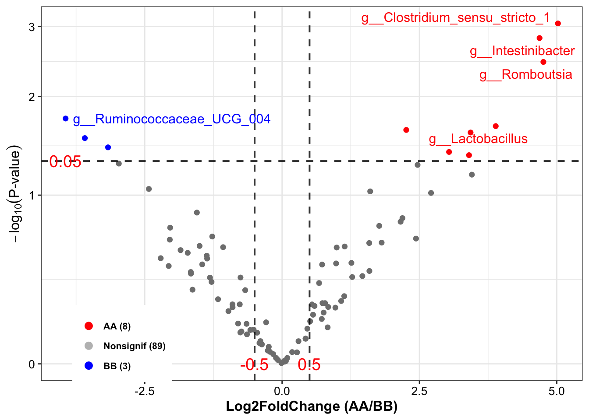
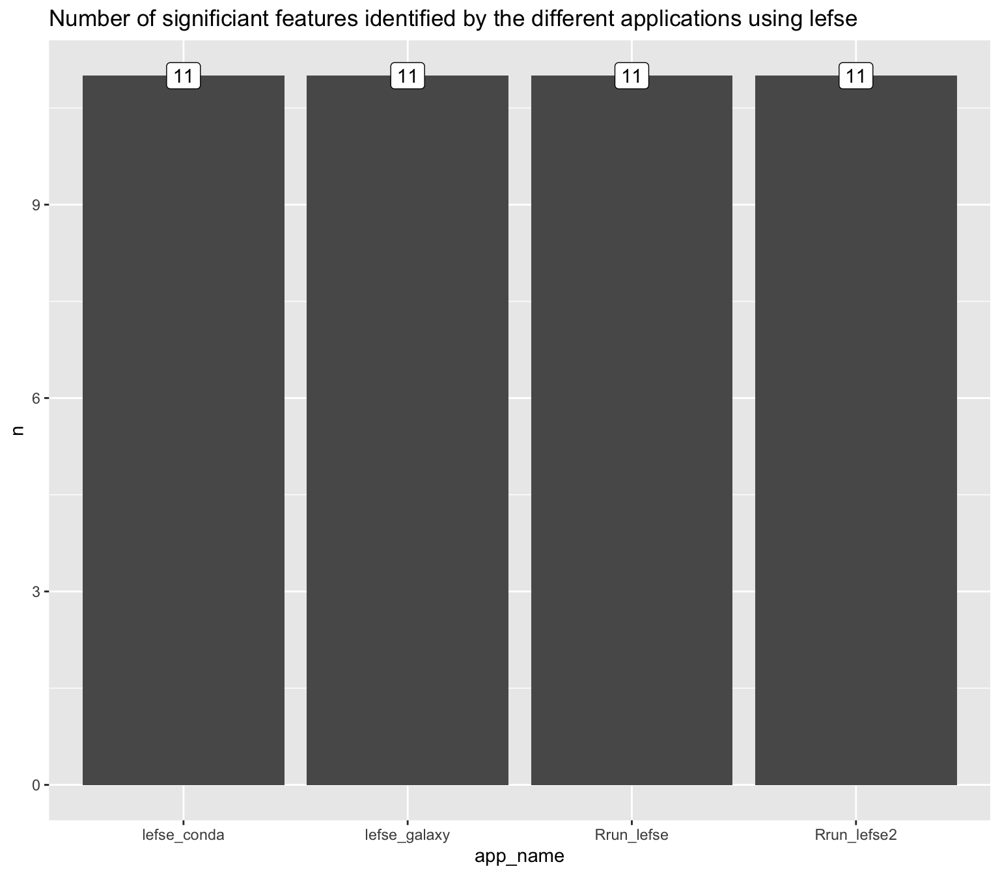
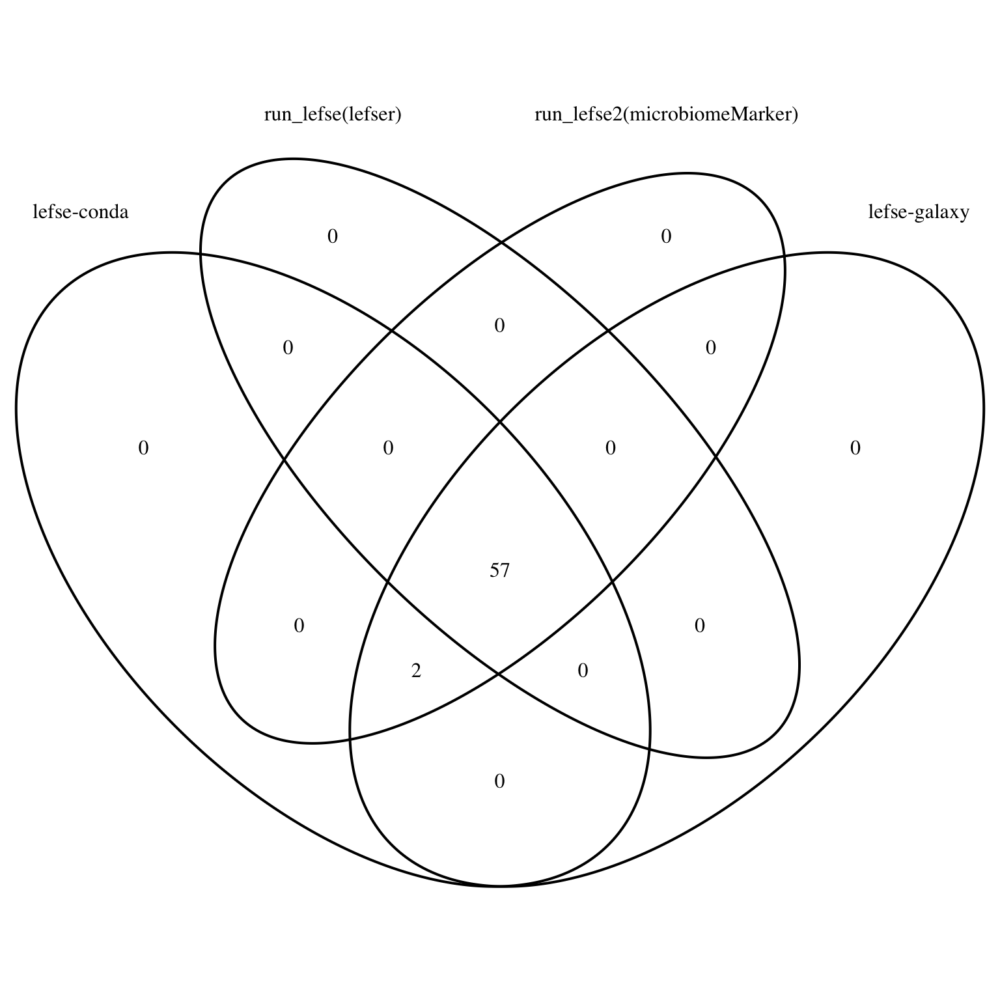
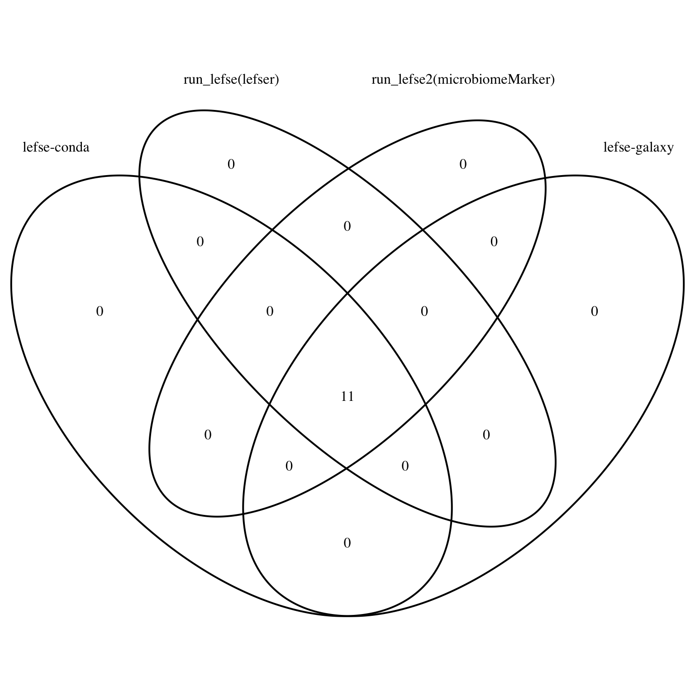
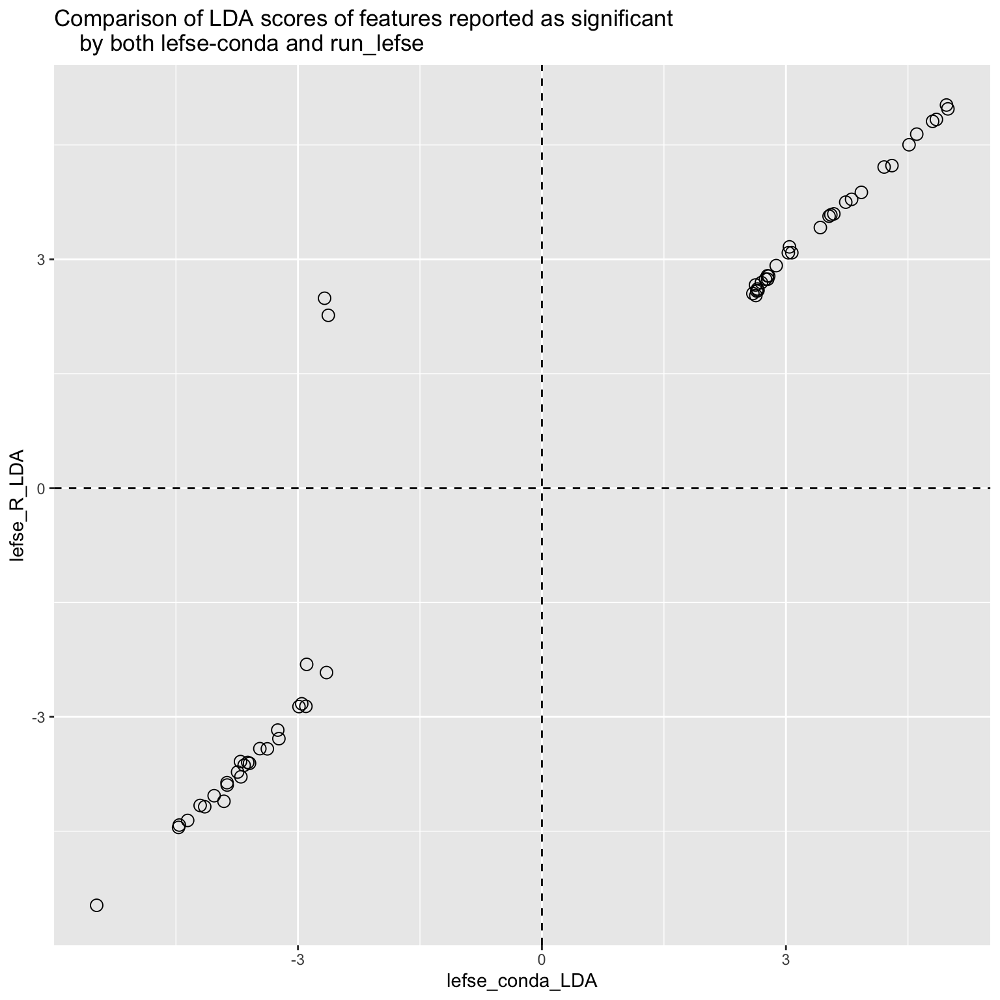
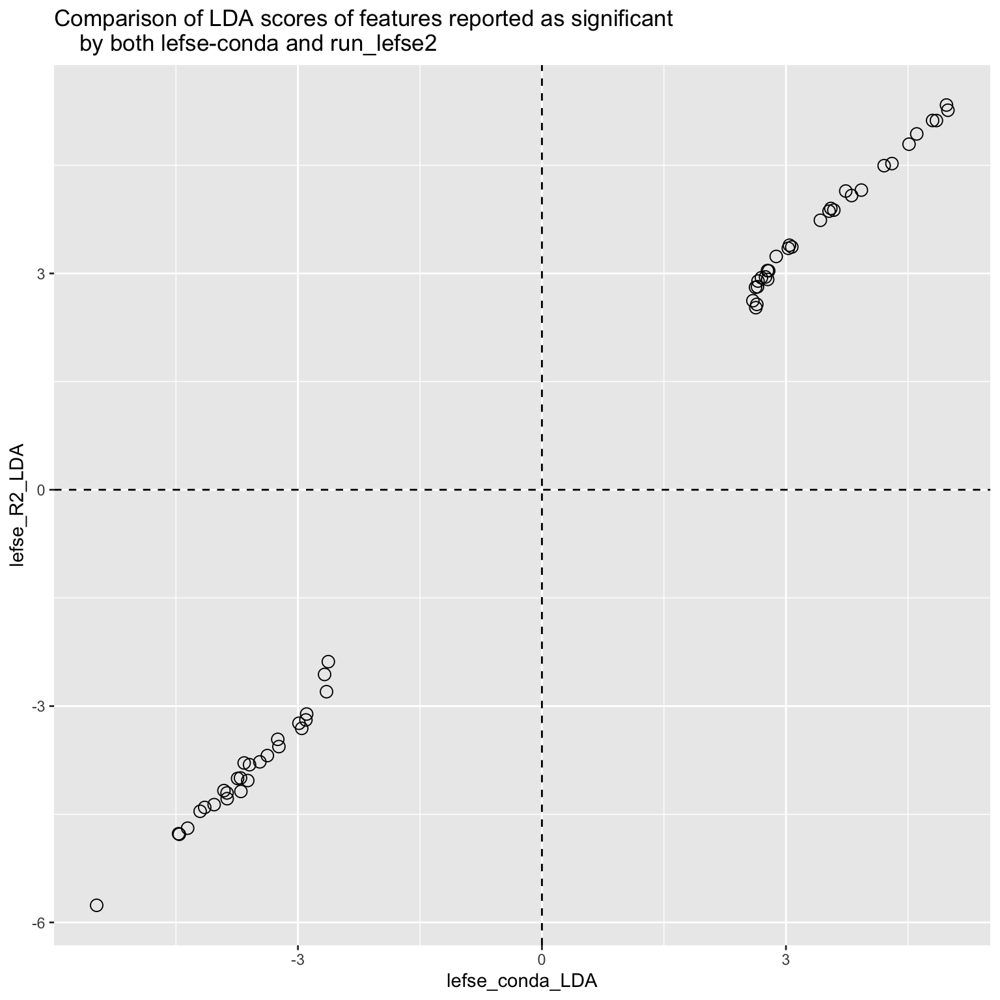
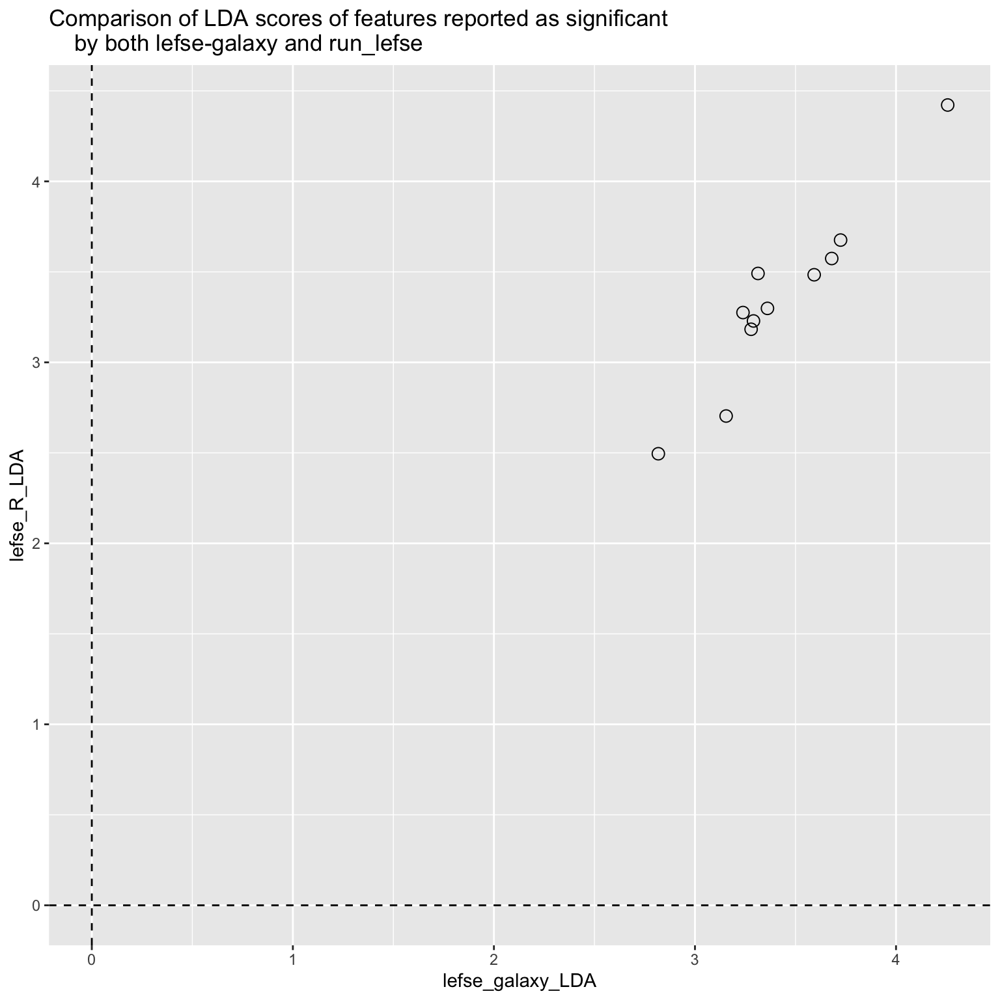
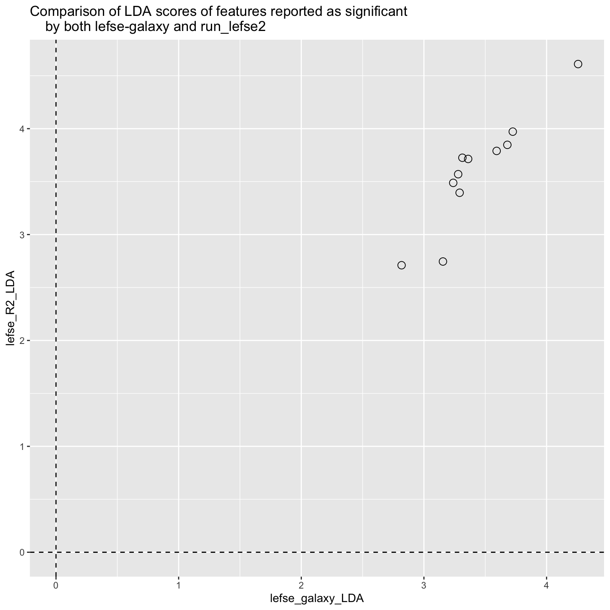

Chapter 11 Differential analysis
Identifying the significant taxa between case and control group is necessary. There are too many differential analysis (DA) approaches to choose (Nearing et al. 2022), we provide some of them which focusing on microbial data, including:
| Tool.version. | Input | Normalization | Transformation | Distribution | MicrobialData |
|---|---|---|---|---|---|
| ALDEx2 (1.26.0) | Counts | None | CLR | Dirichlet-multinormial | 16s |
| limma voom (3.50.1) | Counts/Relative | None/TMM | Log; Precision weighting | Normal | 16s/MGS |
| mbzinb (0.2) | Counts | RLE | None | Zero-inflated negative binomial | 16s |
| omnibus (0.2) | Counts | GMPR(Geometric Mean of Pairwise Ratios) | None | Zero-inflated negative binomial | 16s |
| RAIDA (1.0) | Counts | None | zero-inflated Log | Modified t-test | 16s |
| Wilcox(rare/CLR) | Counts/Relative | None | None/CLR | Non-parametric | 16s/MGS |
| LEfSe | Rarefied Counts/Relative | TSS | None | Non-parametric | 16s/MGS |
| t-test (rare) | Counts/Relative | None | None | Normal | 16s/MGS |
| metagenomeSeq (1.36.0) | Counts | CSS | Log | Zero-inflated (log) Normal | 16s |
| DESeq2 (1.34.0) | Counts | RLE | None | Negative binomial | 16s |
| edgeR (3.36.0) | Counts | RLE/TMM | None | Negative binomial | 16s |
| ANCOM-II (2.1) | Counts/Relative | None | ALR | Non-parametric | 16s/MGS |
| Corncob (0.2.0) | Counts | None | None | Beta-binomial | 16s |
| MaAslin2 (1.8.0) | Counts/Relative | None/TSS | AST | Normal | 16s/MGS |
Loading packages
library(XMAS2)
library(dplyr)
library(tibble)
library(phyloseq)
library(ggplot2)
library(ggpubr)11.1 Amplicon sequencing microbial data (16s)
We use the same strategy to filter phyloseq object.
data("dada2_ps")
# step1: Removing samples of specific group in phyloseq-class object
dada2_ps_remove_BRS <- get_GroupPhyloseq(
ps = dada2_ps,
group = "Group",
group_names = "QC",
discard = TRUE)
# step2: Rarefying counts in phyloseq-class object
dada2_ps_rarefy <- norm_rarefy(object = dada2_ps_remove_BRS,
size = 51181)
# step3: Extracting specific taxa phyloseq-class object
dada2_ps_rare_genus <- summarize_taxa(ps = dada2_ps_rarefy,
taxa_level = "Genus",
absolute = TRUE)
# step4: Aggregating low relative abundance or unclassified taxa into others
# dada2_ps_genus_LRA <- summarize_LowAbundance_taxa(ps = dada2_ps_rare_genus,
# cutoff = 10,
# unclass = TRUE)
# step4: Filtering the low relative abundance or unclassified taxa by the threshold
dada2_ps_genus_filter <- run_filter(ps = dada2_ps_rare_genus,
cutoff = 10,
unclass = TRUE)
# step5: Trimming the taxa with low occurrence less than threshold
dada2_ps_genus_filter_trim <- run_trim(object = dada2_ps_genus_filter,
cutoff = 0.2,
trim = "feature")
dada2_ps_genus_filter_trim## phyloseq-class experiment-level object
## otu_table() OTU Table: [ 100 taxa and 23 samples ]
## sample_data() Sample Data: [ 23 samples by 1 sample variables ]
## tax_table() Taxonomy Table: [ 100 taxa by 6 taxonomic ranks ]11.1.1 ALDEx2
ALDEx2 package is from Unifying the analysis of high-throughput sequencing datasets: characterizing RNA-seq, 16S rRNA gene sequencing and selective growth experiments by compositional data analysis (Fernandes et al. 2014), and its principle is using log-ratio transformation and statistical testing to find the significant Taxa. (Caution: the otu_table must be integers).
run_aldex provides 11 parameters. For instance, norm and transform are used to normalization and transformation input data. More details to see help(run_aldex).
DA_ALDEx2 <- run_aldex(
ps = dada2_ps_genus_filter_trim,
group = "Group",
group_names = c("AA", "BB"),
method = "t.test")## |------------(25%)----------(50%)----------(75%)----------|colnames(DA_ALDEx2)## [1] "TaxaID" "Block" "Enrichment"
## [4] "EffectSize" "Pvalue" "AdjustedPvalue"
## [7] "Median CLR \n(All)" "Median CLR\nAA" "Median CLR\nBB"
## [10] "Log2FoldChange (Median)\nAA_vs_BB" "Median Abundance\n(All)" "Median Abundance\nAA"
## [13] "Median Abundance\nBB" "Log2FoldChange (Mean)\nAA_vs_BB" "Mean Abundance\n(All)"
## [16] "Mean Abundance\nAA" "Mean Abundance\nBB" "Occurrence (100%)\n(All)"
## [19] "Occurrence (100%)\nAA" "Occurrence (100%)\nBB" "Odds Ratio (95% CI)"head(DA_ALDEx2)## TaxaID Block Enrichment EffectSize Pvalue AdjustedPvalue Median CLR \n(All) Median CLR\nAA
## 1 g__Acidaminococcus 9_AA vs 14_BB Nonsignif 0.03216861 0.6548749 0.9018534 -3.4244631 -3.555905
## 2 g__Actinomyces 9_AA vs 14_BB Nonsignif 0.09330854 0.6658567 0.9138848 2.7645196 2.167638
## 3 g__Adlercreutzia 9_AA vs 14_BB Nonsignif 0.30832148 0.3184500 0.7716171 -0.7734251 -2.223805
## 4 g__Agathobacter 9_AA vs 14_BB Nonsignif -0.08089118 0.6408318 0.9042170 5.4463483 6.081374
## 5 g__Akkermansia 9_AA vs 14_BB Nonsignif -0.15579201 0.5972170 0.8723074 -2.9580004 -2.541838
## 6 g__Alistipes 9_AA vs 14_BB Nonsignif -0.09579649 0.6356202 0.9052481 3.7226931 4.768802
## Median CLR\nBB Log2FoldChange (Median)\nAA_vs_BB Median Abundance\n(All) Median Abundance\nAA Median Abundance\nBB
## 1 -3.3102684 NA 0 0 0.0
## 2 3.1218379 -0.9577718 30 26 50.5
## 3 0.3041529 NA 0 0 9.0
## 4 5.3302183 0.1524904 316 329 296.0
## 5 -3.2004909 NA 0 0 0.0
## 6 3.4586946 -0.1085245 64 64 69.0
## Log2FoldChange (Mean)\nAA_vs_BB Mean Abundance\n(All) Mean Abundance\nAA Mean Abundance\nBB Occurrence (100%)\n(All)
## 1 1.7051442 58.82609 101.777778 31.21429 21.74
## 2 -1.3107676 50.91304 26.777778 66.42857 82.61
## 3 -2.4683647 19.21739 5.111111 28.28571 43.48
## 4 1.7488297 996.26087 1740.444444 517.85714 65.22
## 5 -2.1676332 93.78261 30.000000 134.78571 21.74
## 6 0.2000385 163.86957 177.888889 154.85714 73.91
## Occurrence (100%)\nAA Occurrence (100%)\nBB Odds Ratio (95% CI)
## 1 22.22 21.43 0.67 (-0.11;1.5)
## 2 88.89 78.57 4.1 (6.8;1.3)
## 3 33.33 50.00 8.6 (13;4.3)
## 4 55.56 71.43 0.39 (-1.4;2.2)
## 5 22.22 21.43 1.5 (2.3;0.71)
## 6 77.78 71.43 0.88 (0.64;1.1)Results:
The results comprises more than 10 columns, and the details as follow:
TaxaID: taxa name;
Block: groups’ names and numbers;
Enrichment: enriched direction based on Median Abundance and AdjustedPvalue;
EffectSize: effect size of taxa by ALDEx2;
Pvalue and AdjustedPvalue: significant level of Pvalue and Adjusted-pvalue by ALDEx2;
Median CLR (All)/(group AA)/(group BB): Median CLR (normalization by ALDEx2) in all, group AA and group BB, respectively;
**Log2FoldChange (Median)_vs_BB**: Log2FoldChange (Median Abundance) between group AA and group BB;
Median Abundance (All)/(group AA)/(group BB): Median Abundance in all, group AA and group BB, respectively;
**Log2FoldChange (Mean)_vs_BB**: Log2FoldChange (Mean Abundance) between group AA and group BB;
Mean Abundance (All)/(group AA)/(group BB): Mean Abundance in all, group AA and group BB, respectively;
Occurrence (All)/(group AA)/(group BB): Occurrence in all, group AA and group BB, respectively;
Odds Ratio (95% CI): 95% confidence interval odds ratio between group AA and group BB.
Please open the below buttons, if you want to see other options for differential analysis in ALDEx2.
run_da() pattern
We also provide another function run_da to run ALDEx2 differential analysis.
DA_ALDEx2 <- run_da(
ps = dada2_ps_genus_filter_trim,
group = "Group",
group_names = c("AA", "BB"),
da_method = "aldex",
method = "t.test")## |------------(25%)----------(50%)----------(75%)----------|colnames(DA_ALDEx2)## [1] "TaxaID" "Block" "Enrichment"
## [4] "EffectSize" "Pvalue" "AdjustedPvalue"
## [7] "Median CLR \n(All)" "Median CLR\nAA" "Median CLR\nBB"
## [10] "Log2FoldChange (Median)\nAA_vs_BB" "Median Abundance\n(All)" "Median Abundance\nAA"
## [13] "Median Abundance\nBB" "Log2FoldChange (Mean)\nAA_vs_BB" "Mean Abundance\n(All)"
## [16] "Mean Abundance\nAA" "Mean Abundance\nBB" "Occurrence (100%)\n(All)"
## [19] "Occurrence (100%)\nAA" "Occurrence (100%)\nBB" "Odds Ratio (95% CI)"otu_table or sample_table as inputdata
We also provide data_otu and data_sam as input data to run run_aldex.
DA_ALDEx2 <- run_aldex(
data_otu = phyloseq::otu_table(dada2_ps_genus_filter_trim),
data_sam = phyloseq::sample_data(dada2_ps_genus_filter_trim),
group = "Group",
group_names = c("AA", "BB"),
method = "t.test")## |------------(25%)----------(50%)----------(75%)----------|colnames(DA_ALDEx2)## [1] "TaxaID" "Block" "Enrichment"
## [4] "EffectSize" "Pvalue" "AdjustedPvalue"
## [7] "Median CLR \n(All)" "Median CLR\nAA" "Median CLR\nBB"
## [10] "Log2FoldChange (Median)\nAA_vs_BB" "Median Abundance\n(All)" "Median Abundance\nAA"
## [13] "Median Abundance\nBB" "Log2FoldChange (Mean)\nAA_vs_BB" "Mean Abundance\n(All)"
## [16] "Mean Abundance\nAA" "Mean Abundance\nBB" "Occurrence (100%)\n(All)"
## [19] "Occurrence (100%)\nAA" "Occurrence (100%)\nBB" "Odds Ratio (95% CI)"taxa_level option
We also provide taxa_level for choosing the specific taxonomic level to run run_aldex.
DA_ALDEx2 <- run_aldex(
ps = dada2_ps,
taxa_level = "Genus",
group = "Group",
group_names = c("AA", "BB"),
method = "t.test")## |------------(25%)----------(50%)----------(75%)----------|colnames(DA_ALDEx2)## [1] "TaxaID" "Block" "Enrichment"
## [4] "EffectSize" "Pvalue" "AdjustedPvalue"
## [7] "Median CLR \n(All)" "Median CLR\nAA" "Median CLR\nBB"
## [10] "Log2FoldChange (Median)\nAA_vs_BB" "Median Abundance\n(All)" "Median Abundance\nAA"
## [13] "Median Abundance\nBB" "Log2FoldChange (Mean)\nAA_vs_BB" "Mean Abundance\n(All)"
## [16] "Mean Abundance\nAA" "Mean Abundance\nBB" "Occurrence (100%)\n(All)"
## [19] "Occurrence (100%)\nAA" "Occurrence (100%)\nBB" "Odds Ratio (95% CI)"11.1.2 limma_voom
limma package is from voom: Precision weights unlock linear model analysis tools for RNA-seq read counts (Law et al. 2014). Firstly, transforming count data to log2-counts per million (logCPM), estimate the mean-variance relationship and use this to compute appropriate observation-level weights. Secondly, fitting multiple linear models by weighted or generalized least squares. Finally, performing empirical bayes statistics for differential expression.
run_limma_voom provides 11 parameters. For instance, norm and transform are used to normalization and transformation input data. More details to see help(run_limma_voom).
DA_limma_voom <- run_limma_voom(
ps = dada2_ps_genus_filter_trim,
group = "Group",
group_names = c("AA", "BB"))
colnames(DA_limma_voom)## [1] "TaxaID" "Block" "Enrichment"
## [4] "EffectSize" "logFC" "Pvalue"
## [7] "AdjustedPvalue" "Log2FoldChange (Median)\nAA_vs_BB" "Median Abundance\n(All)"
## [10] "Median Abundance\nAA" "Median Abundance\nBB" "Log2FoldChange (Mean)\nAA_vs_BB"
## [13] "Mean Abundance\n(All)" "Mean Abundance\nAA" "Mean Abundance\nBB"
## [16] "Occurrence (100%)\n(All)" "Occurrence (100%)\nAA" "Occurrence (100%)\nBB"
## [19] "Odds Ratio (95% CI)"head(DA_limma_voom)## TaxaID Block Enrichment EffectSize logFC Pvalue AdjustedPvalue
## 1 g__Clostridium_sensu_stricto_1 9_AA vs 14_BB Nonsignif 5.021733 5.021733 0.0008906114 0.0766607
## 2 g__Intestinibacter 9_AA vs 14_BB Nonsignif 4.686583 4.686583 0.0015332140 0.0766607
## 3 g__Romboutsia 9_AA vs 14_BB Nonsignif 4.756063 4.756063 0.0034873620 0.1162454
## 4 g__Ruminococcaceae_UCG_004 9_AA vs 14_BB Nonsignif -3.940866 -3.940866 0.0181806330 0.3696540
## 5 g__Lactobacillus 9_AA vs 14_BB Nonsignif 3.888865 3.888865 0.0221002911 0.3696540
## 6 g__Veillonella 9_AA vs 14_BB Nonsignif 3.431177 3.431177 0.0258757799 0.3696540
## Log2FoldChange (Median)\nAA_vs_BB Median Abundance\n(All) Median Abundance\nAA Median Abundance\nBB
## 1 NA 11 0 39.5
## 2 NA 14 0 58.0
## 3 -7.036174 107 2 262.5
## 4 NA 11 104 0.0
## 5 -3.033423 56 24 196.5
## 6 NA 13 0 40.5
## Log2FoldChange (Mean)\nAA_vs_BB Mean Abundance\n(All) Mean Abundance\nAA Mean Abundance\nBB Occurrence (100%)\n(All)
## 1 -4.884638 257.21739 14.00000 413.57143 60.87
## 2 -2.157952 83.56522 26.88889 120.00000 60.87
## 3 -3.131606 296.47826 51.77778 453.78571 78.26
## 4 2.275424 65.26087 126.22222 26.07143 52.17
## 5 -5.090571 791.26087 37.44444 1275.85714 86.96
## 6 -0.635927 65.52174 49.00000 76.14286 56.52
## Occurrence (100%)\nAA Occurrence (100%)\nBB Odds Ratio (95% CI)
## 1 22.22 85.71 11000 (11000;11000)
## 2 22.22 85.71 4.2 (7;1.4)
## 3 55.56 92.86 37 (44;30)
## 4 77.78 35.71 0.17 (-3.3;3.6)
## 5 77.78 92.86 1.8e+08 (1.8e+08;1.8e+08)
## 6 22.22 78.57 1.3 (1.8;0.79)Results:
The results comprises more than 10 columns, and the details as follow:
TaxaID: taxa name;
Block: groups’ names and numbers;
Enrichment: enriched direction based on Median Abundance and AdjustedPvalue;
EffectSize: effect size of taxa by limma;
logFC: LogFC from groups’ coefficient by limma;
Pvalue and AdjustedPvalue: significant level of Pvalue and Adjusted-pvalue by limma;
**Log2FoldChange (Median)_vs_BB**: Log2FoldChange (Median Abundance) between group AA and group BB;
Median Abundance (All)/(group AA)/(group BB): Median Abundance in all, group AA and group BB, respectively;
**Log2FoldChange (Mean)_vs_BB**: Log2FoldChange (Mean Abundance) between group AA and group BB;
Mean Abundance (All)/(group AA)/(group BB): Mean Abundance in all, group AA and group BB, respectively;
Occurrence (All)/(group AA)/(group BB): Occurrence in all, group AA and group BB, respectively;
Odds Ratio (95% CI): 95% confidence interval odds ratio between group AA and group BB.
Please open the below buttons, if you want to see other options for differential analysis in limma.
other options for limma-voom
if(0) {
DA_limma_voom <- run_limma_voom(
data_otu = phyloseq::otu_table(dada2_ps_genus_filter_trim),
data_sam = phyloseq::sample_data(dada2_ps_genus_filter_trim),
group = "Group",
group_names = c("AA", "BB"))
DA_limma_voom <- run_limma_voom(
ps = dada2_ps,
taxa_level = "Genus",
group = "Group",
group_names = c("AA", "BB"))
DA_limma_voom <- run_da(
ps = dada2_ps_genus_filter_trim,
group = "Group",
group_names = c("AA", "BB"))
head(DA_limma_voom)
}11.1.3 mbzinb
mbzinb package is from An omnibus test for differential distribution analysis of microbiome sequencing data (J. Chen et al. 2018). It uses zeroinflated negative binomial model to investigate the significant taxa. (Caution: the otu_table must be integers).
DA_mbzinb <- run_mbzinb(
ps = dada2_ps_genus_filter_trim,
group = "Group",
group_names = c("AA", "BB"))
colnames(DA_mbzinb)## [1] "TaxaID" "Block" "Enrichment"
## [4] "Pvalue" "AdjustedPvalue" "EffectSize"
## [7] "base.mean" "mean.LFC" "base.abund"
## [10] "abund.LFC" "base.prev" "prev.change"
## [13] "base.disp" "disp.LFC" "statistic"
## [16] "Log2FoldChange (Median)\nAA_vs_BB" "Median Abundance\n(All)" "Median Abundance\nAA"
## [19] "Median Abundance\nBB" "Log2FoldChange (Mean)\nAA_vs_BB" "Mean Abundance\n(All)"
## [22] "Mean Abundance\nAA" "Mean Abundance\nBB" "Occurrence (100%)\n(All)"
## [25] "Occurrence (100%)\nAA" "Occurrence (100%)\nBB" "Odds Ratio (95% CI)"head(DA_mbzinb)## TaxaID Block Enrichment Pvalue AdjustedPvalue EffectSize base.mean mean.LFC base.abund
## 1 g__Lactobacillus 9_AA vs 14_BB Nonsignif 0.003445014 0.1564333 1238.41270 33.59784 4.5605786 42.55933
## 2 g__Veillonella 9_AA vs 14_BB Nonsignif 0.005578505 0.1564333 27.14286 40.19132 0.6303784 180.85352
## 3 g__Clostridium_sensu_stricto_1 9_AA vs 14_BB Nonsignif 0.007406534 0.1564333 399.57143 10.61857 4.5552518 46.18153
## 4 g__Ruminiclostridium_5 9_AA vs 14_BB Nonsignif 0.007582511 0.1564333 25.62698 30.04447 0.8479487 30.04447
## 5 g__Ruminococcus_1 9_AA vs 14_BB Nonsignif 0.008839059 0.1564333 88.71429 39.70707 1.7153262 178.70020
## 6 g__Tyzzerella_4 9_AA vs 14_BB Nonsignif 0.010053476 0.1564333 169.41270 51.73606 1.7830194 465.54115
## abund.LFC base.prev prev.change base.disp disp.LFC statistic Log2FoldChange (Median)\nAA_vs_BB Median Abundance\n(All)
## 1 4.2823480 0.7894354 0.1679182 9.014570e-01 1.275777 13.63594 -3.0334230 56
## 2 -1.2059334 0.2222314 0.5713478 5.952821e-02 3.984325 12.60309 NA 13
## 3 2.4345380 0.2299311 0.7700602 1.205364e+00 1.475574 11.99319 NA 11
## 4 1.0696202 1.0000000 -0.1424287 1.214928e-01 1.749897 11.94257 -0.3289485 45
## 5 1.0269047 0.2221994 0.1358792 2.507315e-09 28.621384 11.61166 NA 0
## 6 -0.4966242 0.1111310 0.4284745 1.370351e-09 30.800186 11.33333 NA 0
## Median Abundance\nAA Median Abundance\nBB Log2FoldChange (Mean)\nAA_vs_BB Mean Abundance\n(All) Mean Abundance\nAA
## 1 24 196.5 -5.0905713 791.26087 37.44444
## 2 0 40.5 -0.6359270 65.52174 49.00000
## 3 0 39.5 -4.8846378 257.21739 14.00000
## 4 41 51.5 -0.7849381 51.04348 35.44444
## 5 0 0.0 -1.4189209 107.00000 53.00000
## 6 0 4.5 -2.0807691 155.56522 52.44444
## Mean Abundance\nBB Occurrence (100%)\n(All) Occurrence (100%)\nAA Occurrence (100%)\nBB Odds Ratio (95% CI)
## 1 1275.85714 86.96 77.78 92.86 1.8e+08 (1.8e+08;1.8e+08)
## 2 76.14286 56.52 22.22 78.57 1.3 (1.8;0.79)
## 3 413.57143 60.87 22.22 85.71 11000 (11000;11000)
## 4 61.07143 91.30 100.00 85.71 2.4 (4.2;0.69)
## 5 141.71429 30.43 22.22 35.71 1.6 (2.6;0.68)
## 6 221.85714 34.78 11.11 50.00 2.1 (3.5;0.64)Results:
The results comprises more than 10 columns, and the details as follow:
TaxaID: taxa name;
Block: groups’ names and numbers;
Enrichment: enriched direction based on Median Abundance and AdjustedPvalue;
EffectSize: effect size of taxa by mbzinb;
Pvalue and AdjustedPvalue: significant level of Pvalue and Adjusted-pvalue by mbzinb;
base.mean: fitted mean abundance parameter times the fitted prevalence in baseline group;
mean.LFC: log2-fold change in fitted mean between other group and baseline;
base.abund: fitted mean abundance parameter in baseline group;
abund.LFC: log2-fold change in fitted mean abundance parameter between other group and baseline;
base.prev: fitted prevalence in baseline group;
prev.change: (linear) difference in prevalence between baseline group and other group (other-baseline);
base.disp: fitted dispersion parameter in baseline group;
disp.LFC: log2-fold change in fitted dispersion parameter between other group and baseline;
statistic: value of likelihood ratio test statistic;
**Log2FoldChange (Median)_vs_BB**: Log2FoldChange (Median Abundance) between group AA and group BB;
Median Abundance (All)/(group AA)/(group BB): Median Abundance in all, group AA and group BB, respectively;
**Log2FoldChange (Mean)_vs_BB**: Log2FoldChange (Mean Abundance) between group AA and group BB;
Mean Abundance (All)/(group AA)/(group BB): Mean Abundance in all, group AA and group BB, respectively;
Occurrence (All)/(group AA)/(group BB): Occurrence in all, group AA and group BB, respectively;
Odds Ratio (95% CI): 95% confidence interval odds ratio between group AA and group BB.
Please open the below buttons, if you want to see other options for differential analysis in mbzinb.
other options for mbzinb
if(0) {
DA_mbzinb <- run_mbzinb(
data_otu = phyloseq::otu_table(dada2_ps_genus_filter_trim),
data_sam = phyloseq::sample_data(dada2_ps_genus_filter_trim),
group = "Group",
group_names = c("AA", "BB"))
DA_mbzinb <- run_mbzinb(
ps = dada2_ps,
taxa_level = "Genus",
group = "Group",
group_names = c("AA", "BB"))
DA_mbzinb <- run_da(
ps = dada2_ps_genus_filter_trim,
group = "Group",
group_names = c("AA", "BB"))
head(DA_mbzinb)
}11.1.4 omnibus
This approach is also from mbzinb (J. Chen et al. 2018) package. it uses GMPR (Geometric Mean of Pairwise Ratios) (L. Chen et al. 2018) to get the size factors.
where we specify models for count (abundance), zero (prevalence) and dispersion part. We also provide likelihood ratio test (zinb.lrt) for different models.
(Caution: the otu_table must be integers).
DA_omnibus <- run_omnibus(
ps = dada2_ps_genus_filter_trim,
group = "Group",
group_names = c("AA", "BB"),
method = "omnibus")## Start GMPR normalization ...
## Start Winsorization ...
## Perform filtering ...
## --A total of 92 taxa will be tested with a sample size of 23 !
## --Omnibus test is selected!
## --Dispersion is treated as a parameter of interest!
## Start testing ...
## 10 %
## 20 %
## 30 %
## 40 %
## 50 %
## 60 %
## 70 %
## 80 %
## 90 %
## 100%!
## Handle failed taxa using permutation test!
## Permutation test ....
## Completed!colnames(DA_omnibus)## [1] "TaxaID" "Block" "Enrichment"
## [4] "Pvalue" "AdjustedPvalue" "EffectSize"
## [7] "chi.stat" "df" "abund.baseline"
## [10] "prev.baseline" "dispersion.baseline" "abund.LFC.CompvarBB.est"
## [13] "abund.LFC.CompvarBB.se" "prev.LOD.CompvarBB.est" "prev.LOD.CompvarBB.se"
## [16] "dispersion.LFC.CompvarBB.est" "dispersion.LFC.CompvarBB.se" "method"
## [19] "Log2FoldChange (Median)\nAA_vs_BB" "Median Abundance\n(All)" "Median Abundance\nAA"
## [22] "Median Abundance\nBB" "Log2FoldChange (Mean)\nAA_vs_BB" "Mean Abundance\n(All)"
## [25] "Mean Abundance\nAA" "Mean Abundance\nBB" "Occurrence (100%)\n(All)"
## [28] "Occurrence (100%)\nAA" "Occurrence (100%)\nBB" "Odds Ratio (95% CI)"head(DA_omnibus)## TaxaID Block Enrichment Pvalue AdjustedPvalue EffectSize chi.stat df abund.baseline prev.baseline
## 1 g__Acidaminococcus 9_AA vs 14_BB Nonsignif 0.26476211 0.6245670 70.56349 3.9696315 3 0.0050842054 0.2910300
## 2 g__Actinomyces 9_AA vs 14_BB Nonsignif 0.13905545 0.4437791 39.65079 5.4930407 3 0.0006912502 0.8894593
## 3 g__Adlercreutzia 9_AA vs 14_BB Nonsignif 0.06293962 0.3795000 23.17460 7.2995223 3 0.0003647798 0.3333734
## 4 g__Agathobacter 9_AA vs 14_BB Nonsignif 0.12024562 0.4437791 1222.58730 5.8287526 3 0.0553800205 0.5555645
## 5 g__Akkermansia 9_AA vs 14_BB Nonsignif 0.86344681 0.9142217 104.78571 0.7413110 3 0.0031212219 0.2357130
## 6 g__Alistipes 9_AA vs 14_BB Nonsignif 0.97967175 0.9796718 23.03175 0.1869261 3 0.0049314397 0.7815505
## dispersion.baseline abund.LFC.CompvarBB.est abund.LFC.CompvarBB.se prev.LOD.CompvarBB.est prev.LOD.CompvarBB.se
## 1 0.2041100 -0.36978708 1.4040484 -0.4088983 0.9811747
## 2 3.1647486 0.73754098 0.3062639 -0.7727912 1.2480678
## 3 11.0696374 1.29262130 0.3614490 0.6959681 0.8863794
## 4 1.6324698 -1.15572656 0.4756819 0.6968830 0.8947568
## 5 0.5149302 -0.83042868 1.7432216 2.3976744 1.0114415
## 6 1.0012623 0.03215791 0.4770876 -0.3541131 1.0007538
## dispersion.LFC.CompvarBB.est dispersion.LFC.CompvarBB.se method Log2FoldChange (Median)\nAA_vs_BB Median Abundance\n(All)
## 1 2.8343543 1.1361534 omnibus NA 0
## 2 -0.5318657 0.6766040 omnibus -0.9577718 30
## 3 -1.7738398 1.4812754 omnibus NA 0
## 4 -0.5257607 0.7011677 omnibus 0.1524904 316
## 5 -2.4675480 1.0580187 omnibus NA 0
## 6 0.1662740 0.6265328 omnibus -0.1085245 64
## Median Abundance\nAA Median Abundance\nBB Log2FoldChange (Mean)\nAA_vs_BB Mean Abundance\n(All) Mean Abundance\nAA
## 1 0 0.0 1.7051442 58.82609 101.777778
## 2 26 50.5 -1.3107676 50.91304 26.777778
## 3 0 9.0 -2.4683647 19.21739 5.111111
## 4 329 296.0 1.7488297 996.26087 1740.444444
## 5 0 0.0 -2.1676332 93.78261 30.000000
## 6 64 69.0 0.2000385 163.86957 177.888889
## Mean Abundance\nBB Occurrence (100%)\n(All) Occurrence (100%)\nAA Occurrence (100%)\nBB Odds Ratio (95% CI)
## 1 31.21429 21.74 22.22 21.43 0.67 (-0.11;1.5)
## 2 66.42857 82.61 88.89 78.57 4.1 (6.8;1.3)
## 3 28.28571 43.48 33.33 50.00 8.6 (13;4.3)
## 4 517.85714 65.22 55.56 71.43 0.39 (-1.4;2.2)
## 5 134.78571 21.74 22.22 21.43 1.5 (2.3;0.71)
## 6 154.85714 73.91 77.78 71.43 0.88 (0.64;1.1)Results:
The results comprises more than 10 columns, and the details as follow:
TaxaID: taxa name;
Block: groups’ names and numbers;
Enrichment: enriched direction based on Median Abundance and AdjustedPvalue;
EffectSize: effect size of taxa by glm function to assess the pvalue effect;
Pvalue and AdjustedPvalue: significant level of Pvalue and Adjusted-pvalue by omnibus;
chi.stat: chisquare statistics;
df: degree freedom;
abund.baseline: mean abundance in baseline group;
prev.baseline: prevalence in baseline group;
dispersion.baseline: dispersion in baseline group;
abund.LFC.CompvarBB.est: log2-fold change in abundance between group BB and other group;
abund.LFC.CompvarBB.se: log2-fold change of standard errors in abundance between group BB and other group;
prev.LOD.CompvarBB.est: prevalence of low of detect value in group BB;
prev.LOD.CompvarBB.se: prevalence’s standard errors of low of detect value in group BB;
dispersion.LFC.CompvarBB.est: log2-fold change in dispersion in group BB;
dispersion.LFC.CompvarBB.se: log2-fold change in dispersion’s standard errors in group BB;
method: methods of test;
**Log2FoldChange (Median)_vs_BB**: Log2FoldChange (Median Abundance) between group AA and group BB;
Median Abundance (All)/(group AA)/(group BB): Median Abundance in all, group AA and group BB, respectively;
**Log2FoldChange (Mean)_vs_BB**: Log2FoldChange (Mean Abundance) between group AA and group BB;
Mean Abundance (All)/(group AA)/(group BB): Mean Abundance in all, group AA and group BB, respectively;
Occurrence (All)/(group AA)/(group BB): Occurrence in all, group AA and group BB, respectively;
Odds Ratio (95% CI): 95% confidence interval odds ratio between group AA and group BB.
Please open the below buttons, if you want to see other options for differential analysis in omnibus.
other options for omnibus
if(0) {
DA_omnibus <- run_omnibus(
data_otu = phyloseq::otu_table(dada2_ps_genus_filter_trim),
data_sam = phyloseq::sample_data(dada2_ps_genus_filter_trim),
group = "Group",
group_names = c("AA", "BB"),
method = "omnibus")
DA_omnibus <- run_omnibus(
ps = dada2_ps,
taxa_level = "Genus",
group = "Group",
group_names = c("AA", "BB"),
method = "omnibus")
DA_omnibus <- run_da(
ps = dada2_ps_genus_filter_trim,
group = "Group",
group_names = c("AA", "BB"),
da_method = "omnibus",
method = "omnibus")
head(DA_omnibus)
}11.1.5 RAIDA
RAIDA package is from A robust approach for identifying differentially abundant features in metagenomic samples (Sohn, Du, and An 2015). It uses Ratio Approach for Identifying Differential Abundance (RAIDA). (Caution: the otu_table must be integers).
DA_RAIDA <- run_raida(
ps = dada2_ps_genus_filter_trim,
group = "Group",
group_names = c("AA", "BB"))
colnames(DA_RAIDA)## [1] "TaxaID" "Block" "Enrichment"
## [4] "EffectSize" "Pvalue" "AdjustedPvalue"
## [7] "eta_AA" "mean_AA" "sd_AA"
## [10] "eta_BB" "mean_BB" "sd_BB"
## [13] "mod.pool.var" "Log2FoldChange (Median)\nAA_vs_BB" "Median Abundance\n(All)"
## [16] "Median Abundance\nAA" "Median Abundance\nBB" "Log2FoldChange (Mean)\nAA_vs_BB"
## [19] "Mean Abundance\n(All)" "Mean Abundance\nAA" "Mean Abundance\nBB"
## [22] "Occurrence (100%)\n(All)" "Occurrence (100%)\nAA" "Occurrence (100%)\nBB"
## [25] "Odds Ratio (95% CI)"head(DA_RAIDA)## TaxaID Block Enrichment EffectSize Pvalue AdjustedPvalue eta_AA mean_AA
## 1 g__Mogibacterium 9_AA vs 14_BB Nonsignif 32.53175 0.004340020 0.2061720 1.0000000 -6.665684
## 2 g__Megasphaera 9_AA vs 14_BB Nonsignif 409.19048 0.004581601 0.2061720 0.6666667 1.550194
## 3 g__Romboutsia 9_AA vs 14_BB Nonsignif 402.00794 0.025287679 0.7353741 0.4444444 -3.748832
## 4 g__Lactobacillus 9_AA vs 14_BB Nonsignif 1238.41270 0.033492279 0.7353741 0.2222222 -3.438359
## 5 g__Tyzzerella 9_AA vs 14_BB Nonsignif 75.78571 0.059752064 0.7353741 0.4444444 -2.455253
## 6 g__Christensenellaceae_R_7_group 9_AA vs 14_BB Nonsignif 44.21429 0.068999409 0.7353741 0.6666667 -2.344046
## sd_AA eta_BB mean_BB sd_BB mod.pool.var Log2FoldChange (Median)\nAA_vs_BB Median Abundance\n(All)
## 1 0.0000010 0.57142857 -3.409936 1.909244 2.765864 NA 0
## 2 0.4452225 0.64285714 -1.221216 1.074673 1.185998 NA 0
## 3 1.5814829 0.07142857 -1.467304 2.085972 3.260003 -7.036174 107
## 4 1.7766726 0.07142857 -1.250908 2.484244 4.276535 -3.033423 56
## 5 1.3348729 0.78571429 -5.123355 3.191661 3.081402 NA 0
## 6 0.5621146 0.64285714 -4.420090 1.890465 2.021487 NA 0
## Median Abundance\nAA Median Abundance\nBB Log2FoldChange (Mean)\nAA_vs_BB Mean Abundance\n(All) Mean Abundance\nAA
## 1 0 0.0 -8.198620 19.91304 0.1111111
## 2 0 0.0 1.738259 335.26087 584.3333333
## 3 2 262.5 -3.131606 296.47826 51.7777778
## 4 24 196.5 -5.090571 791.26087 37.4444444
## 5 4 0.0 2.433624 46.86957 93.0000000
## 6 0 0.0 1.801549 35.08696 62.0000000
## Mean Abundance\nBB Occurrence (100%)\n(All) Occurrence (100%)\nAA Occurrence (100%)\nBB Odds Ratio (95% CI)
## 1 32.64286 30.43 11.11 42.86 2e+283 (2e+283;2e+283)
## 2 175.14286 34.78 33.33 35.71 0.54 (-0.65;1.7)
## 3 453.78571 78.26 55.56 92.86 37 (44;30)
## 4 1275.85714 86.96 77.78 92.86 1.8e+08 (1.8e+08;1.8e+08)
## 5 17.21429 34.78 55.56 21.43 0.4 (-1.4;2.2)
## 6 17.78571 34.78 33.33 35.71 0.54 (-0.65;1.7)Results:
The results comprises more than 10 columns, and the details as follow:
TaxaID: taxa name;
Block: groups’ names and numbers;
Enrichment: enriched direction based on Median Abundance and AdjustedPvalue;
EffectSize: effect size of taxa by glm function to assess the pvalue effect;
Pvalue and AdjustedPvalue: significant level of Pvalue and Adjusted-pvalue by RAIDA;
eta_AA: vector containing estimated probabilities of the false zero state for group AA;
mean_AA: vector containing estimated means of log ratios for group AA;
sd_AA: vector containing estimated standard deviations of log ratios for group AA;
eta_BB: vector containing estimated probabilities of the false zero state for group BB;
mean_BB: vector containing estimated means of log ratios for group BB;
sd_BB: vector containing estimated standard deviations of log ratios for group BB;
mod.pool.var: vector containing estimated posterior variances of log ratios;
**Log2FoldChange (Median)_vs_BB**: Log2FoldChange (Median Abundance) between group AA and group BB;
Median Abundance (All)/(group AA)/(group BB): Median Abundance in all, group AA and group BB, respectively;
**Log2FoldChange (Mean)_vs_BB**: Log2FoldChange (Mean Abundance) between group AA and group BB;
Mean Abundance (All)/(group AA)/(group BB): Mean Abundance in all, group AA and group BB, respectively;
Occurrence (All)/(group AA)/(group BB): Occurrence in all, group AA and group BB, respectively;
Odds Ratio (95% CI): 95% confidence interval odds ratio between group AA and group BB.
Please open the below buttons, if you want to see other options for differential analysis in RAIDA.
other options for RAIDA
if (0) {
DA_RAIDA <- run_raida(
data_otu = phyloseq::otu_table(dada2_ps_genus_filter_trim),
data_sam = phyloseq::sample_data(dada2_ps_genus_filter_trim),
group = "Group",
group_names = c("AA", "BB"))
DA_RAIDA <- run_raida(
ps = dada2_ps,
taxa_level = "Genus",
group = "Group",
group_names = c("AA", "BB"))
DA_RAIDA <- run_da(
ps = dada2_ps_genus_filter_trim,
group = "Group",
group_names = c("AA", "BB"),
da_method = "raida")
head(DA_RAIDA)
}11.1.6 Wilcoxon Rank Sum and Signed Rank Tests
Wilcoxon Rank Sum and Signed Rank Tests, which are nonparametric test methods, use the rank of taxa abundance to find the significant taxa.
- Ordinary pattern
DA_wilcox <- run_wilcox(
ps = dada2_ps_genus_filter_trim,
group = "Group",
group_names = c("AA", "BB"))
colnames(DA_wilcox)## [1] "TaxaID" "Block" "Enrichment"
## [4] "EffectSize" "Statistic" "Pvalue"
## [7] "AdjustedPvalue" "Log2FoldChange (Median)\nAA_vs_BB" "Median Abundance\n(All)"
## [10] "Median Abundance\nAA" "Median Abundance\nBB" "Log2FoldChange (Rank)\nAA_vs_BB"
## [13] "Mean Rank Abundance\nAA" "Mean Rank Abundance\nBB" "Occurrence (100%)\n(All)"
## [16] "Occurrence (100%)\nAA" "Occurrence (100%)\nBB" "Odds Ratio (95% CI)"head(DA_wilcox)## TaxaID Block Enrichment EffectSize Statistic Pvalue AdjustedPvalue Log2FoldChange (Median)\nAA_vs_BB
## 1 g__Acidaminococcus 9_AA vs 14_BB Nonsignif 70.56349 63.5 1.0000000 1.0000000 NA
## 2 g__Actinomyces 9_AA vs 14_BB Nonsignif 39.65079 44.5 0.2556616 0.7014746 -0.9577718
## 3 g__Adlercreutzia 9_AA vs 14_BB Nonsignif 23.17460 44.0 0.1980169 0.7014746 NA
## 4 g__Agathobacter 9_AA vs 14_BB Nonsignif 1222.58730 71.0 0.6293971 0.8964389 0.1524904
## 5 g__Akkermansia 9_AA vs 14_BB Nonsignif 104.78571 64.5 0.9304707 0.9692403 NA
## 6 g__Alistipes 9_AA vs 14_BB Nonsignif 23.03175 67.0 0.8239942 0.9363570 -0.1085245
## Median Abundance\n(All) Median Abundance\nAA Median Abundance\nBB Log2FoldChange (Rank)\nAA_vs_BB Mean Rank Abundance\nAA
## 1 0 0 0.0 0.01201252 12.06
## 2 30 26 50.5 -0.42227633 9.94
## 3 0 0 9.0 -0.43387758 9.89
## 4 316 329 296.0 0.17342686 12.89
## 5 0 0 0.0 0.03358045 12.17
## 6 64 64 69.0 0.08724541 12.44
## Mean Rank Abundance\nBB Occurrence (100%)\n(All) Occurrence (100%)\nAA Occurrence (100%)\nBB Odds Ratio (95% CI)
## 1 11.96 21.74 22.22 21.43 0.67 (-0.11;1.5)
## 2 13.32 82.61 88.89 78.57 4.1 (6.8;1.3)
## 3 13.36 43.48 33.33 50.00 8.6 (13;4.3)
## 4 11.43 65.22 55.56 71.43 0.39 (-1.4;2.2)
## 5 11.89 21.74 22.22 21.43 1.5 (2.3;0.71)
## 6 11.71 73.91 77.78 71.43 0.88 (0.64;1.1)Results:
The results comprises more than 10 columns, and the details as follow:
TaxaID: taxa name;
Block: groups’ names and numbers;
Enrichment: enriched direction based on Median Abundance and AdjustedPvalue;
EffectSize: effect size of taxa by glm function to assess the pvalue effect;
Pvalue and AdjustedPvalue: significant level of Pvalue and Adjusted-pvalue;
**Log2FoldChange (Median)_vs_BB**: Log2FoldChange (Median Abundance) between group AA and group BB;
Median Abundance (All)/(group AA)/(group BB): Median Abundance in all, group AA and group BB, respectively;
**Log2FoldChange (Mean Rank)_vs_BB**: Log2FoldChange (Mean Rank Abundance) between group AA and group BB;
Mean Rank Abundance (All)/(group AA)/(group BB): Mean Rank Abundance in all, group AA and group BB, respectively;
**Log2FoldChange (Mean)_vs_BB**: Log2FoldChange (Mean Abundance) between group AA and group BB;
Mean Abundance (All)/(group AA)/(group BB): Mean Abundance in all, group AA and group BB, respectively;
Occurrence (All)/(group AA)/(group BB): Occurrence in all, group AA and group BB, respectively;
Odds Ratio (95% CI): 95% confidence interval odds ratio between group AA and group BB.
other options for wilcox
if (0) {
DA_wilcox <- run_wilcox(
data_otu = phyloseq::otu_table(dada2_ps_genus_filter_trim),
data_sam = phyloseq::sample_data(dada2_ps_genus_filter_trim),
group = "Group",
group_names = c("AA", "BB"))
DA_wilcox <- run_wilcox(
ps = dada2_ps,
taxa_level = "Genus",
group = "Group",
group_names = c("AA", "BB"))
DA_wilcox <- run_da(
ps = dada2_ps_genus_filter_trim,
group = "Group",
group_names = c("AA", "BB"),
da_method = "wilcox")
head(DA_wilcox)
}- wilcox_rarefy: random subsampling counts to the smallest library size in the data set.
# summary
summarize_phyloseq(ps = dada2_ps_genus_filter_trim)## [[1]]
## [1] "1] Min. number of reads = 32359"
##
## [[2]]
## [1] "2] Max. number of reads = 49328"
##
## [[3]]
## [1] "3] Total number of reads = 1008016"
##
## [[4]]
## [1] "4] Average number of reads = 43826.7826086957"
##
## [[5]]
## [1] "5] Median number of reads = 45596"
##
## [[6]]
## [1] "7] Sparsity = 0.501304347826087"
##
## [[7]]
## [1] "6] Any OTU sum to 1 or less? NO"
##
## [[8]]
## [1] "8] Number of singletons = 0"
##
## [[9]]
## [1] "9] Percent of OTUs that are singletons\n (i.e. exactly one read detected across all samples)0"
##
## [[10]]
## [1] "10] Number of sample variables are: 1"
##
## [[11]]
## [1] "Group"# run
DA_wilcox_rarefy <- run_wilcox(
ps = dada2_ps_genus_filter_trim,
group = "Group",
group_names = c("AA", "BB"),
norm = "rarefy")
colnames(DA_wilcox_rarefy)## [1] "TaxaID" "Block" "Enrichment"
## [4] "EffectSize" "Statistic" "Pvalue"
## [7] "AdjustedPvalue" "Log2FoldChange (Median)\nAA_vs_BB" "Median Abundance\n(All)"
## [10] "Median Abundance\nAA" "Median Abundance\nBB" "Log2FoldChange (Rank)\nAA_vs_BB"
## [13] "Mean Rank Abundance\nAA" "Mean Rank Abundance\nBB" "Occurrence (100%)\n(All)"
## [16] "Occurrence (100%)\nAA" "Occurrence (100%)\nBB" "Odds Ratio (95% CI)"The output is the same as the previous results of ordinary pattern.
other options for wilcox_rarefy
if (0) {
DA_wilcox_rarefy <- run_da(
ps = dada2_ps_genus_filter_trim,
group = "Group",
group_names = c("AA", "BB"),
da_method = "wilcox",
norm = "rarefy")
head(DA_wilcox_rarefy)
}- wilcox_CLR: centered log-ratio normalization.
DA_wilcox_CLR <- run_wilcox(
ps = dada2_ps_genus_filter_trim,
group = "Group",
group_names = c("AA", "BB"),
norm = "CLR")
colnames(DA_wilcox_CLR)## [1] "TaxaID" "Block" "Enrichment"
## [4] "EffectSize" "Statistic" "Pvalue"
## [7] "AdjustedPvalue" "Log2FoldChange (Median)\nAA_vs_BB" "Median Abundance\n(All)"
## [10] "Median Abundance\nAA" "Median Abundance\nBB" "Log2FoldChange (Rank)\nAA_vs_BB"
## [13] "Mean Rank Abundance\nAA" "Mean Rank Abundance\nBB" "Occurrence (100%)\n(All)"
## [16] "Occurrence (100%)\nAA" "Occurrence (100%)\nBB" "Odds Ratio (95% CI)"The output is the same as the previous results of ordinary pattern.
other options for wilcox_CLR
if(0) {
DA_wilcox_CLR <- run_da(
ps = dada2_ps_genus_filter_trim,
group = "Group",
group_names = c("AA", "BB"),
da_method = "wilcox",
norm = "CLR")
head(DA_wilcox_CLR)
}11.1.7 Liner discriminant analysis (LDA) effect size (LEfSe)
LEfSe method is from Metagenomic biomarker discovery and explanation (Segata et al. 2011). It uses Liner discriminant analysis model to identify Differential Taxa.
DA_lefse <- run_lefse(
ps = dada2_ps_genus_filter_trim,
group = "Group",
group_names = c("AA", "BB"),
norm = "CPM",
Lda = 2)
colnames(DA_lefse)## [1] "TaxaID" "Block" "Enrichment"
## [4] "LDA_Score" "EffectSize" "Log2FoldChange (Median)\nAA_vs_BB"
## [7] "Median Abundance\n(All)" "Median Abundance\nAA" "Median Abundance\nBB"
## [10] "Log2FoldChange (Mean)\nAA_vs_BB" "Mean Abundance\n(All)" "Mean Abundance\nAA"
## [13] "Mean Abundance\nBB" "Occurrence (100%)\n(All)" "Occurrence (100%)\nAA"
## [16] "Occurrence (100%)\nBB" "Odds Ratio (95% CI)"head(DA_lefse)## TaxaID Block Enrichment LDA_Score EffectSize Log2FoldChange (Median)\nAA_vs_BB
## 1 g__Parasutterella 9_AA vs 14_BB AA -3.604579 2.234915 4.402050
## 2 g__Ruminococcaceae_UCG_004 9_AA vs 14_BB AA -2.823442 2.137082 NA
## 3 g__Odoribacter 9_AA vs 14_BB BB 2.340309 1.876320 NA
## 4 g__Intestinibacter 9_AA vs 14_BB BB 3.146337 2.384308 NA
## 5 g__Clostridium_sensu_stricto_1 9_AA vs 14_BB BB 3.671138 2.679298 NA
## 6 g__Romboutsia 9_AA vs 14_BB BB 3.705317 2.929140 -6.856424
## Median Abundance\n(All) Median Abundance\nAA Median Abundance\nBB Log2FoldChange (Mean)\nAA_vs_BB Mean Abundance\n(All)
## 1 172.77125 1080.35695 51.09966 4.481148 3901.0977
## 2 241.24923 2451.90494 0.00000 2.342928 1443.2092
## 3 21.93175 604.99989 0.00000 2.099583 578.0758
## 4 383.50911 0.00000 1398.79740 -1.964554 1883.3386
## 5 225.11921 0.00000 1173.88222 -4.746617 5861.9051
## 6 2189.79596 50.35627 5835.02623 -3.334490 7094.1306
## Mean Abundance\nAA Mean Abundance\nBB Occurrence (100%)\n(All) Occurrence (100%)\nAA Occurrence (100%)\nBB
## 1 9320.3061 417.3209 65.22 88.89 50.00
## 2 2822.7139 556.3847 52.17 77.78 35.71
## 3 1083.9017 252.9020 52.17 77.78 35.71
## 4 680.6440 2656.4994 60.87 22.22 85.71
## 5 350.3379 9405.0554 60.87 22.22 85.71
## 6 1086.1419 10956.4090 78.26 55.56 92.86
## Odds Ratio (95% CI)
## 1 0.0025 (-12;12)
## 2 0.14 (-3.7;4)
## 3 0.31 (-2;2.6)
## 4 3.4 (5.8;1)
## 5 4900 (5000;4900)
## 6 76 (85;68)Results:
The results comprises more than 10 columns, and the details as follow:
TaxaID: taxa name;
Block: groups’ names and numbers;
Enrichment: enriched direction based on Median Abundance and AdjustedPvalue;
EffectSize: effect size of taxa by lefse;
LDA_Score: significant level of Pvalue and Adjusted-pvalue;
**Log2FoldChange (Median)_vs_BB**: Log2FoldChange (Median Abundance) between group AA and group BB;
Median Abundance (All)/(group AA)/(group BB): Median Abundance in all, group AA and group BB, respectively;
**Log2FoldChange (Mean)_vs_BB**: Log2FoldChange (Mean Abundance) between group AA and group BB;
Mean Abundance (All)/(group AA)/(group BB): Mean Abundance in all, group AA and group BB, respectively;
Occurrence (All)/(group AA)/(group BB): Occurrence in all, group AA and group BB, respectively;
Odds Ratio (95% CI): 95% confidence interval odds ratio between group AA and group BB.
other options for lefse
if (0) {
DA_lefse <- run_lefse(
data_otu = phyloseq::otu_table(dada2_ps_genus_filter_trim),
data_sam = phyloseq::sample_data(dada2_ps_genus_filter_trim),
group = "Group",
group_names = c("AA", "BB"),
norm = "CPM",
Lda = 0)
DA_lefse <- run_lefse(
ps = dada2_ps,
taxa_level = "Genus",
group = "Group",
group_names = c("AA", "BB"),
norm = "CPM",
Lda = 0)
DA_lefse <- run_da(
ps = dada2_ps_genus_filter_trim,
group = "Group",
group_names = c("AA", "BB"),
da_method = "lefse",
norm = "CPM",
Lda = 0)
head(DA_lefse)
}11.1.8 t-test
T test, a parametric test method, identifies the significant taxa.
- Ordinary pattern
DA_ttest <- run_ttest(
ps = dada2_ps_genus_filter_trim,
group = "Group",
group_names = c("AA", "BB"))
colnames(DA_ttest)## [1] "TaxaID" "Block"
## [3] "Enrichment" "EffectSize"
## [5] "Statistic" "Pvalue"
## [7] "AdjustedPvalue" "Log2FoldChange (Median)\nAA_vs_BB"
## [9] "Median Abundance\n(All)" "Median Abundance\nAA"
## [11] "Median Abundance\nBB" "Log2FoldChange (geometricmean)\nAA_vs_BB"
## [13] "GeometricMean Abundance\n(All)" "GeometricMean Abundance\nAA"
## [15] "GeometricMean Abundance\nBB" "Occurrence (100%)\n(All)"
## [17] "Occurrence (100%)\nAA" "Occurrence (100%)\nBB"
## [19] "Odds Ratio (95% CI)"head(DA_ttest)## TaxaID Block Enrichment EffectSize Statistic Pvalue AdjustedPvalue
## 1 g__Acidaminococcus 9_AA vs 14_BB Nonsignif 70.56349 0.6845254 0.51170983 0.7107081
## 2 g__Actinomyces 9_AA vs 14_BB Nonsignif 39.65079 -1.9079866 0.07478702 0.6397026
## 3 g__Adlercreutzia 9_AA vs 14_BB Nonsignif 23.17460 -2.1601919 0.04743155 0.6397026
## 4 g__Agathobacter 9_AA vs 14_BB Nonsignif 1222.58730 1.4034718 0.19417159 0.6397026
## 5 g__Akkermansia 9_AA vs 14_BB Nonsignif 104.78571 -0.7632086 0.45788140 0.6983360
## 6 g__Alistipes 9_AA vs 14_BB Nonsignif 23.03175 0.2691871 0.79125424 0.9059862
## Log2FoldChange (Median)\nAA_vs_BB Median Abundance\n(All) Median Abundance\nAA Median Abundance\nBB
## 1 NA 0 0 0.0
## 2 -0.9577718 30 26 50.5
## 3 NA 0 0 9.0
## 4 0.1524904 316 329 296.0
## 5 NA 0 0 0.0
## 6 -0.1085245 64 64 69.0
## Log2FoldChange (geometricmean)\nAA_vs_BB GeometricMean Abundance\n(All) GeometricMean Abundance\nAA
## 1 2.674648 1.2740132 4.3847026
## 2 -2.270362 0.6530643 0.1647934
## 3 -3.268970 0.9776732 0.1479603
## 4 1.413058 0.7929084 1.0990412
## 5 -3.452848 1.3734381 0.4150530
## 6 -2.043760 0.4449523 0.2025430
## GeometricMean Abundance\nBB Occurrence (100%)\n(All) Occurrence (100%)\nAA Occurrence (100%)\nBB Odds Ratio (95% CI)
## 1 0.6867376 21.74 22.22 21.43 0.67 (-0.11;1.5)
## 2 0.7950361 82.61 88.89 78.57 4.1 (6.8;1.3)
## 3 1.4262753 43.48 33.33 50.00 8.6 (13;4.3)
## 4 0.4127063 65.22 55.56 71.43 0.39 (-1.4;2.2)
## 5 4.5447977 21.74 22.22 21.43 1.5 (2.3;0.71)
## 6 0.8351231 73.91 77.78 71.43 0.88 (0.64;1.1)Results:
The results comprises more than 10 columns, and the details as follow:
TaxaID: taxa name;
Block: groups’ names and numbers;
Enrichment: enriched direction based on Median Abundance and AdjustedPvalue;
EffectSize: effect size of taxa by glm function to assess the pvalue effect;
Pvalue and AdjustedPvalue: significant level of Pvalue and Adjusted-pvalue;
**Log2FoldChange (Median)_vs_BB**: Log2FoldChange (Median Abundance) between group AA and group BB;
Median Abundance (All)/(group AA)/(group BB): Median Abundance in all, group AA and group BB, respectively;
**Log2FoldChange (GeometricMean)_vs_BB**: Log2FoldChange (GeometricMean Abundance) between group AA and group BB;
GeometricMean Abundance (All)/(group AA)/(group BB): GeometricMean Abundance in all, group AA and group BB, respectively;
**Log2FoldChange (Mean)_vs_BB**: Log2FoldChange (Mean Abundance) between group AA and group BB;
Mean Abundance (All)/(group AA)/(group BB): Mean Abundance in all, group AA and group BB, respectively;
Occurrence (All)/(group AA)/(group BB): Occurrence in all, group AA and group BB, respectively;
Odds Ratio (95% CI): 95% confidence interval odds ratio between group AA and group BB.
other options for t-test
if (0) {
DA_ttest <- run_ttest(
data_otu = phyloseq::otu_table(dada2_ps_genus_filter_trim),
data_sam = phyloseq::sample_data(dada2_ps_genus_filter_trim),
group = "Group",
group_names = c("AA", "BB"))
DA_ttest <- run_ttest(
ps = dada2_ps,
taxa_level = "Genus",
group = "Group",
group_names = c("AA", "BB"))
DA_ttest <- run_da(
ps = dada2_ps_genus_filter_trim,
group = "Group",
group_names = c("AA", "BB"),
da_method = "ttest")
head(DA_ttest)
}- t-test_rarefy: random subsampling counts to the smallest library size in the data set.
DA_ttest_rarefy <- run_ttest(
ps = dada2_ps_genus_filter_trim,
group = "Group",
group_names = c("AA", "BB"),
norm = "rarefy")
colnames(DA_ttest_rarefy)## [1] "TaxaID" "Block"
## [3] "Enrichment" "EffectSize"
## [5] "Statistic" "Pvalue"
## [7] "AdjustedPvalue" "Log2FoldChange (Median)\nAA_vs_BB"
## [9] "Median Abundance\n(All)" "Median Abundance\nAA"
## [11] "Median Abundance\nBB" "Log2FoldChange (geometricmean)\nAA_vs_BB"
## [13] "GeometricMean Abundance\n(All)" "GeometricMean Abundance\nAA"
## [15] "GeometricMean Abundance\nBB" "Occurrence (100%)\n(All)"
## [17] "Occurrence (100%)\nAA" "Occurrence (100%)\nBB"
## [19] "Odds Ratio (95% CI)"The output is the same as the previous results of ordinary pattern.
other options for ttest_rarefy
if (0) {
DA_ttest_rarefy <- run_da(
ps = dada2_ps_genus_filter_trim,
group = "Group",
group_names = c("AA", "BB"),
da_method = "ttest",
norm = "rarefy")
head(DA_ttest_rarefy)
}11.1.9 MetagenomeSeq
MetagenomeSeq package is from Differential abundance analysis for microbial marker-gene surveys (Paulson et al. 2013). It uses zero-inflated Log-Normal mixture model or Zero-inflated Gaussian mixture model to identify the significant taxa between groups. (Caution: the otu_table should be integers).
DA_metagenomeseq <- run_metagenomeseq(
ps = dada2_ps_genus_filter_trim,
group = "Group",
group_names = c("AA", "BB"),
norm = "CSS",
method = "ZILN")
colnames(DA_metagenomeseq)## [1] "TaxaID" "Block" "Enrichment"
## [4] "logFC" "Pvalue" "AdjustedPvalue"
## [7] "se" "Log2FoldChange (Median)\nAA_vs_BB" "Median Abundance\n(All)"
## [10] "Median Abundance\nAA" "Median Abundance\nBB" "Log2FoldChange (Mean)\nAA_vs_BB"
## [13] "Mean Abundance\n(All)" "Mean Abundance\nAA" "Mean Abundance\nBB"
## [16] "Occurrence (100%)\n(All)" "Occurrence (100%)\nAA" "Occurrence (100%)\nBB"
## [19] "Odds Ratio (95% CI)"head(DA_metagenomeseq)## TaxaID Block Enrichment logFC Pvalue AdjustedPvalue se
## 1 g__Terrisporobacter 9_AA vs 14_BB AA 2.1231996 4.332167e-05 0.0007364684 0.5192453
## 2 g__Tyzzerella_4 9_AA vs 14_BB AA 2.5901577 2.752647e-04 0.0023397503 0.7120649
## 3 g__Mogibacterium 9_AA vs 14_BB Nonsignif 1.4203861 8.431066e-04 0.0039964426 0.4254894
## 4 g__F0332 9_AA vs 14_BB Nonsignif 1.2608227 9.403394e-04 0.0039964426 0.3811672
## 5 g__Lachnospiraceae_UCG_001 9_AA vs 14_BB Nonsignif 1.0116177 3.025566e-02 0.1028692297 0.4668874
## 6 g__Peptostreptococcus 9_AA vs 14_BB Nonsignif 0.6034439 6.819273e-02 0.1932127227 0.3308843
## Log2FoldChange (Median)\nAA_vs_BB Median Abundance\n(All) Median Abundance\nAA Median Abundance\nBB
## 1 NA 0 0 6.784969
## 2 NA 0 0 4.361618
## 3 NA 0 0 0.000000
## 4 NA 0 0 0.000000
## 5 NA 0 0 0.000000
## 6 NA 0 0 0.000000
## Log2FoldChange (Mean)\nAA_vs_BB Mean Abundance\n(All) Mean Abundance\nAA Mean Abundance\nBB Occurrence (100%)\n(All)
## 1 -3.7339932 35.933695 4.2322026 56.31323 34.78
## 2 -2.0976784 308.151607 102.8322440 440.14263 34.78
## 3 -7.4275944 22.915793 0.2178649 37.50732 30.43
## 4 -3.8972729 6.573925 0.6948392 10.35334 30.43
## 5 1.0638692 17.276654 25.3148039 12.10927 21.74
## 6 0.5877487 2.786766 3.4995626 2.32854 21.74
## Occurrence (100%)\nAA Occurrence (100%)\nBB Odds Ratio (95% CI)
## 1 11.11 50.00 25 (31;19)
## 2 11.11 50.00 2.1 (3.5;0.64)
## 3 11.11 42.86 Inf (Inf;Inf)
## 4 11.11 42.86 19000 (19000;19000)
## 5 11.11 28.57 0.67 (-0.11;1.5)
## 6 11.11 28.57 0.77 (0.27;1.3)Results:
The results comprises more than 10 columns, and the details as follow:
TaxaID: taxa name;
Block: groups’ names and numbers;
Enrichment: enriched direction based on Median Abundance and AdjustedPvalue;
logFC: fitted coefficient represents the fold-change for group AA and group BB;
se: standard error;
Pvalue and AdjustedPvalue: significant level of Pvalue and Adjusted-pvalue;
**Log2FoldChange (Median)_vs_BB**: Log2FoldChange (Median Abundance) between group AA and group BB;
Median Abundance (All)/(group AA)/(group BB): Median Abundance in all, group AA and group BB, respectively;
**Log2FoldChange (Mean)_vs_BB**: Log2FoldChange (Mean Abundance) between group AA and group BB;
Mean Abundance (All)/(group AA)/(group BB): Mean Abundance in all, group AA and group BB, respectively;
Occurrence (All)/(group AA)/(group BB): Occurrence in all, group AA and group BB, respectively;
Odds Ratio (95% CI): 95% confidence interval odds ratio between group AA and group BB.
other options for metagenomeseq
if (0) {
DA_metagenomeseq <- run_metagenomeseq(
data_otu = phyloseq::otu_table(dada2_ps_genus_filter_trim),
data_sam = phyloseq::sample_data(dada2_ps_genus_filter_trim),
group = "Group",
group_names = c("AA", "BB"),
norm = "CSS",
method = "ZILN")
DA_metagenomeseq <- run_metagenomeseq(
ps = dada2_ps,
taxa_level = "Genus",
group = "Group",
group_names = c("AA", "BB"),
norm = "CSS",
method = "ZILN")
DA_metagenomeseq<- run_da(
ps = dada2_ps_genus_filter_trim,
group = "Group",
group_names = c("AA", "BB"),
da_method = "metagenomeseq",
norm = "CSS",
method = "ZILN")
head(DA_metagenomeseq)
}11.1.10 DESeq2
DESeq2 package is from Moderated estimation of fold change and dispersion for RNA-seq data with DESeq2 (Love, Huber, and Anders 2014). Differential expression analysis based on the Negative Binomial (a.k.a. Gamma-Poisson) distribution.(Caution: the otu_table must be integers).
DA_deseq2 <- run_deseq2(
ps = dada2_ps_genus_filter_trim,
group = "Group",
group_names = c("AA", "BB"))
colnames(DA_deseq2)## [1] "TaxaID" "Block" "Enrichment"
## [4] "Pvalue" "AdjustedPvalue" "logFC"
## [7] "Statistic" "Log2FoldChange (Median)\nAA_vs_BB" "Median Abundance\n(All)"
## [10] "Median Abundance\nAA" "Median Abundance\nBB" "Log2FoldChange (Mean)\nAA_vs_BB"
## [13] "Mean Abundance\n(All)" "Mean Abundance\nAA" "Mean Abundance\nBB"
## [16] "Occurrence (100%)\n(All)" "Occurrence (100%)\nAA" "Occurrence (100%)\nBB"
## [19] "Odds Ratio (95% CI)"head(DA_deseq2)## TaxaID Block Enrichment Pvalue AdjustedPvalue logFC Statistic
## 1 g__Acidaminococcus 9_AA vs 14_BB Nonsignif 0.003314859 0.02209906 3.1129168 2.9369235
## 2 g__Actinomyces 9_AA vs 14_BB Nonsignif 0.122064731 0.31069563 1.3609640 1.5461650
## 3 g__Adlercreutzia 9_AA vs 14_BB BB 0.008736333 0.04408614 2.4112622 2.6222032
## 4 g__Agathobacter 9_AA vs 14_BB Nonsignif 0.301287313 0.51946088 -1.1696067 -1.0336767
## 5 g__Akkermansia 9_AA vs 14_BB Nonsignif 0.395896745 0.60907192 -0.5625950 -0.8489722
## 6 g__Alistipes 9_AA vs 14_BB Nonsignif 0.535255838 0.68622543 -0.5817917 -0.6200030
## Log2FoldChange (Median)\nAA_vs_BB Median Abundance\n(All) Median Abundance\nAA Median Abundance\nBB
## 1 NA 0 0 0.0
## 2 -0.9577718 30 26 50.5
## 3 NA 0 0 9.0
## 4 0.1524904 316 329 296.0
## 5 NA 0 0 0.0
## 6 -0.1085245 64 64 69.0
## Log2FoldChange (Mean)\nAA_vs_BB Mean Abundance\n(All) Mean Abundance\nAA Mean Abundance\nBB Occurrence (100%)\n(All)
## 1 1.7051442 58.82609 101.777778 31.21429 21.74
## 2 -1.3107676 50.91304 26.777778 66.42857 82.61
## 3 -2.4683647 19.21739 5.111111 28.28571 43.48
## 4 1.7488297 996.26087 1740.444444 517.85714 65.22
## 5 -2.1676332 93.78261 30.000000 134.78571 21.74
## 6 0.2000385 163.86957 177.888889 154.85714 73.91
## Occurrence (100%)\nAA Occurrence (100%)\nBB Odds Ratio (95% CI)
## 1 22.22 21.43 0.67 (-0.11;1.5)
## 2 88.89 78.57 4.1 (6.8;1.3)
## 3 33.33 50.00 8.6 (13;4.3)
## 4 55.56 71.43 0.39 (-1.4;2.2)
## 5 22.22 21.43 1.5 (2.3;0.71)
## 6 77.78 71.43 0.88 (0.64;1.1)Results:
The results comprises more than 10 columns, and the details as follow:
TaxaID: taxa name;
Block: groups’ names and numbers;
Enrichment: enriched direction based on Median Abundance and AdjustedPvalue;
logFC: fitted coefficient represents the fold-change for group AA and group BB;
Statistic: test statistic (negative binomial model);
Pvalue and AdjustedPvalue: significant level of Pvalue and Adjusted-pvalue;
**Log2FoldChange (Median)_vs_BB**: Log2FoldChange (Median Abundance) between group AA and group BB;
Median Abundance (All)/(group AA)/(group BB): Median Abundance in all, group AA and group BB, respectively;
**Log2FoldChange (Mean)_vs_BB**: Log2FoldChange (Mean Abundance) between group AA and group BB;
Mean Abundance (All)/(group AA)/(group BB): Mean Abundance in all, group AA and group BB, respectively;
Occurrence (All)/(group AA)/(group BB): Occurrence in all, group AA and group BB, respectively;
Odds Ratio (95% CI): 95% confidence interval odds ratio between group AA and group BB.
other options for deseq2
if (0) {
DA_deseq2 <- run_deseq2(
data_otu = phyloseq::otu_table(dada2_ps_genus_filter_trim),
data_sam = phyloseq::sample_data(dada2_ps_genus_filter_trim),
group = "Group",
group_names = c("AA", "BB"))
DA_deseq2 <- run_deseq2(
ps = dada2_ps,
taxa_level = "Genus",
group = "Group",
group_names = c("AA", "BB"))
DA_deseq2 <- run_da(
ps = dada2_ps_genus_filter_trim,
group = "Group",
group_names = c("AA", "BB"),
da_method = "deseq2")
head(DA_deseq2)
}11.1.11 EdgeR
EdgeR package is from A scaling normalization method for differential expression analysis of RNA-seq data (Robinson and Oshlack 2010). Differential expression analysis based on the Negative Binomial (a.k.a. Gamma-Poisson) distribution. (Caution: the otu_table must be integers).
DA_edger <- run_edger(
ps = dada2_ps_genus_filter_trim,
group = "Group",
group_names = c("AA", "BB"))
Figure 11.1: EdgeR (BVC distance)
colnames(DA_edger)## [1] "TaxaID" "Block" "Enrichment"
## [4] "Pvalue" "AdjustedPvalue" "logFC"
## [7] "logCPM" "LR" "Log2FoldChange (Median)\nAA_vs_BB"
## [10] "Median Abundance\n(All)" "Median Abundance\nAA" "Median Abundance\nBB"
## [13] "Log2FoldChange (Mean)\nAA_vs_BB" "Mean Abundance\n(All)" "Mean Abundance\nAA"
## [16] "Mean Abundance\nBB" "Occurrence (100%)\n(All)" "Occurrence (100%)\nAA"
## [19] "Occurrence (100%)\nBB" "Odds Ratio (95% CI)"head(DA_edger)## TaxaID Block Enrichment Pvalue AdjustedPvalue logFC logCPM LR
## 1 g__Lactobacillus 9_AA vs 14_BB BB 3.058026e-05 0.002540141 6.631114 15.517455 17.381408
## 2 g__Clostridium_sensu_stricto_1 9_AA vs 14_BB BB 5.080282e-05 0.002540141 6.104389 12.947492 16.417915
## 3 g__Mogibacterium 9_AA vs 14_BB Nonsignif 1.378148e-04 0.004593825 4.555227 8.826604 14.531783
## 4 g__Romboutsia 9_AA vs 14_BB BB 4.056005e-04 0.010140012 4.573970 13.481432 12.506215
## 5 g__Eubacterium 9_AA vs 14_BB Nonsignif 6.697887e-04 0.013395774 -3.297185 8.720115 11.571264
## 6 g__Parasutterella 9_AA vs 14_BB AA 2.038985e-03 0.033983079 -3.214725 11.156853 9.514105
## Log2FoldChange (Median)\nAA_vs_BB Median Abundance\n(All) Median Abundance\nAA Median Abundance\nBB
## 1 -3.033423 56 24 196.5
## 2 NA 11 0 39.5
## 3 NA 0 0 0.0
## 4 -7.036174 107 2 262.5
## 5 NA 0 0 0.0
## 6 4.321928 7 50 2.5
## Log2FoldChange (Mean)\nAA_vs_BB Mean Abundance\n(All) Mean Abundance\nAA Mean Abundance\nBB Occurrence (100%)\n(All)
## 1 -5.090571 791.260870 37.4444444 1275.857143 86.96
## 2 -4.884638 257.217391 14.0000000 413.571429 60.87
## 3 -8.198620 19.913043 0.1111111 32.642857 30.43
## 4 -3.131606 296.478261 51.7777778 453.785714 78.26
## 5 2.440393 9.173913 18.2222222 3.357143 30.43
## 6 4.373725 167.565217 398.3333333 19.214286 65.22
## Occurrence (100%)\nAA Occurrence (100%)\nBB Odds Ratio (95% CI)
## 1 77.78 92.86 1.8e+08 (1.8e+08;1.8e+08)
## 2 22.22 85.71 11000 (11000;11000)
## 3 11.11 42.86 2e+283 (2e+283;2e+283)
## 4 55.56 92.86 37 (44;30)
## 5 44.44 21.43 0.34 (-1.8;2.5)
## 6 88.89 50.00 0.0066 (-9.8;9.9)Results:
The results comprises more than 10 columns, and the details as follow:
TaxaID: taxa name;
Block: groups’ names and numbers;
Enrichment: enriched direction based on Median Abundance and AdjustedPvalue;
logFC: fitted coefficient represents the fold-change for group AA and group BB;
logCPM: is the average expression of all samples for that particular gene across all samples on the log-scale expressed in counts per million (cpm, as calculated by edgeR after normalization);
LR: the signed likelihood ratio test statistic;
Pvalue and AdjustedPvalue: significant level of Pvalue and Adjusted-pvalue;
**Log2FoldChange (Median)_vs_BB**: Log2FoldChange (Median Abundance) between group AA and group BB;
Median Abundance (All)/(group AA)/(group BB): Median Abundance in all, group AA and group BB, respectively;
**Log2FoldChange (Mean)_vs_BB**: Log2FoldChange (Mean Abundance) between group AA and group BB;
Mean Abundance (All)/(group AA)/(group BB): Mean Abundance in all, group AA and group BB, respectively;
Occurrence (All)/(group AA)/(group BB): Occurrence in all, group AA and group BB, respectively;
Odds Ratio (95% CI): 95% confidence interval odds ratio between group AA and group BB.
other options for EdgeR
if (0) {
DA_edger <- run_edger(
data_otu = phyloseq::otu_table(dada2_ps_genus_filter_trim),
data_sam = phyloseq::sample_data(dada2_ps_genus_filter_trim),
group = "Group",
group_names = c("AA", "BB"))
DA_edger <- run_edger(
ps = dada2_ps,
taxa_level = "Genus",
group = "Group",
group_names = c("AA", "BB"))
DA_edger <- run_da(
ps = dada2_ps_genus_filter_trim,
group = "Group",
group_names = c("AA", "BB"),
da_method = "edger")
head(DA_edger)
}11.1.12 ANCOM
ANCOM (Analysis of composition of microbiomes) is from Analysis of composition of microbiomes: a novel method for studying microbial composition”, Microbial Ecology in Health (Mandal et al. 2015). ANCOM makes no distributional assumptions and can be implemented in a linear model framework. (Caution: the otu_table must be integers).
DA_ancom <- run_ancom(
ps = dada2_ps_genus_filter_trim,
group = "Group",
group_names = c("AA", "BB"))
Figure 11.2: ANCOM (Structure Zero)
colnames(DA_ancom)## [1] "TaxaID" "Block" "Enrichment"
## [4] "EffectSize" "(W)q-values < alpha" "W_ratio"
## [7] "detected_0.7" "Log2FoldChange (Median)\nAA_vs_BB" "Median Abundance\n(All)"
## [10] "Median Abundance\nAA" "Median Abundance\nBB" "Log2FoldChange (Mean)\nAA_vs_BB"
## [13] "Mean Abundance\n(All)" "Mean Abundance\nAA" "Mean Abundance\nBB"
## [16] "Occurrence (100%)\n(All)" "Occurrence (100%)\nAA" "Occurrence (100%)\nBB"
## [19] "Odds Ratio (95% CI)"head(DA_ancom)## TaxaID Block Enrichment EffectSize (W)q-values < alpha W_ratio detected_0.7
## 1 g__Acidaminococcus 9_AA vs 14_BB BB 0.02320439 0 0 FALSE
## 2 g__Actinomyces 9_AA vs 14_BB BB 0.73520463 0 0 FALSE
## 3 g__Adlercreutzia 9_AA vs 14_BB BB 0.30465472 0 0 FALSE
## 4 g__Agathobacter 9_AA vs 14_BB AA -0.48457752 0 0 FALSE
## 5 g__Akkermansia 9_AA vs 14_BB AA -0.07760459 0 0 FALSE
## 6 g__Alistipes 9_AA vs 14_BB AA -0.01131933 0 0 FALSE
## Log2FoldChange (Median)\nAA_vs_BB Median Abundance\n(All) Median Abundance\nAA Median Abundance\nBB
## 1 NA 0 0 0.0
## 2 -0.9577718 30 26 50.5
## 3 NA 0 0 9.0
## 4 0.1524904 316 329 296.0
## 5 NA 0 0 0.0
## 6 -0.1085245 64 64 69.0
## Log2FoldChange (Mean)\nAA_vs_BB Mean Abundance\n(All) Mean Abundance\nAA Mean Abundance\nBB Occurrence (100%)\n(All)
## 1 1.7051442 58.82609 101.777778 31.21429 21.74
## 2 -1.3107676 50.91304 26.777778 66.42857 82.61
## 3 -2.4683647 19.21739 5.111111 28.28571 43.48
## 4 1.7488297 996.26087 1740.444444 517.85714 65.22
## 5 -2.1676332 93.78261 30.000000 134.78571 21.74
## 6 0.2000385 163.86957 177.888889 154.85714 73.91
## Occurrence (100%)\nAA Occurrence (100%)\nBB Odds Ratio (95% CI)
## 1 22.22 21.43 0.67 (-0.11;1.5)
## 2 88.89 78.57 4.1 (6.8;1.3)
## 3 33.33 50.00 8.6 (13;4.3)
## 4 55.56 71.43 0.39 (-1.4;2.2)
## 5 22.22 21.43 1.5 (2.3;0.71)
## 6 77.78 71.43 0.88 (0.64;1.1)Results:
The results comprises more than 10 columns, and the details as follow:
TaxaID: taxa name;
Block: groups’ names and numbers;
Enrichment: enriched direction based on Median Abundance and AdjustedPvalue;
EffectSize: effect size by ANCOM;
(W)q-values < alpha: q-values less than alpha;
W_ratio: the ratio of W values;
detected_0.7: W_ratio more than 0.7;
**Log2FoldChange (Median)_vs_BB**: Log2FoldChange (Median Abundance) between group AA and group BB;
Median Abundance (All)/(group AA)/(group BB): Median Abundance in all, group AA and group BB, respectively;
**Log2FoldChange (Mean)_vs_BB**: Log2FoldChange (Mean Abundance) between group AA and group BB;
Mean Abundance (All)/(group AA)/(group BB): Mean Abundance in all, group AA and group BB, respectively;
Occurrence (All)/(group AA)/(group BB): Occurrence in all, group AA and group BB, respectively;
Odds Ratio (95% CI): 95% confidence interval odds ratio between group AA and group BB.
other options for ANCOM
if (0) {
DA_ancom <- run_ancom(
data_otu = phyloseq::otu_table(dada2_ps_genus_filter_trim),
data_sam = phyloseq::sample_data(dada2_ps_genus_filter_trim),
group = "Group",
group_names = c("AA", "BB"))
DA_ancom <- run_ancom(
ps = dada2_ps,
taxa_level = "Genus",
group = "Group",
group_names = c("AA", "BB"))
DA_ancom <- run_da(
ps = dada2_ps_genus_filter_trim,
group = "Group",
group_names = c("AA", "BB"),
da_method = "ancom")
head(DA_ancom)
}11.1.13 Corncob
Corncob package is from Modeling microbial abundances and dysbiosis with beta-binomial regression”, Microbial Ecology in Health (Martin, Witten, and Willis 2020). Corncob is based on beta-binomial regression. (Caution: the otu_table must be integers).
if (0) {
DA_corncob <- run_corncob(
ps = dada2_ps_genus_filter_trim,
group = "Group",
group_names = c("AA", "BB"),
method = "Wald")
colnames(DA_ancom)
head(DA_ancom)
}other options for Corncob
if (0) {
DA_corncob <- run_corncob(
data_otu = phyloseq::otu_table(dada2_ps_genus_filter_trim),
data_sam = phyloseq::sample_data(dada2_ps_genus_filter_trim),
group = "Group",
group_names = c("AA", "BB"),
method = "Wald")
DA_corncob <- run_corncob(
ps = dada2_ps,
taxa_level = "Genus",
group = "Group",
group_names = c("AA", "BB"),
method = "Wald")
DA_corncob <- run_da(
ps = dada2_ps_genus_filter_trim,
group = "Group",
group_names = c("AA", "BB"),
da_method = "corncob",
method = "Wald")
head(DA_corncob)
}11.1.14 Maaslin2 (Microbiome Multivariable Association with Linear Models)
Maaslin2 package is from Multivariable association discovery in population-scale meta-omics studies (Mallick et al. 2021). Maaslin2 relies on general linear models to accommodate most modern epidemiological study designs, including cross-sectional and longitudinal, along with a variety of filtering, normalization, and transform methods.
if (0) {
DA_maaslin2 <- run_maaslin2(
ps = dada2_ps_genus_filter_trim,
group = "Group",
group_names = c("AA", "BB"),
transform = "LOG",
norm = "TMM",
method = "LM",
outdir = "./demo_output")
DA_maaslin2 <- run_maaslin2(
ps = dada2_ps,
taxa_level = "Genus",
group = "Group",
group_names = c("AA", "BB"),
transform = "LOG",
norm = "TMM",
method = "LM",
outdir = "./demo_output")
DA_maaslin2 <- run_maaslin2(
data_otu = phyloseq::otu_table(dada2_ps_genus_filter_trim),
data_sam = phyloseq::sample_data(dada2_ps_genus_filter_trim),
group = "Group",
group_names = c("AA", "BB"),
transform = "LOG",
norm = "TMM",
method = "LM",
outdir = "./demo_output")
DA_maaslin2 <- run_da(
ps = dada2_ps_genus_filter_trim,
group = "Group",
group_names = c("AA", "BB"),
da_method = "maaslin2",
transform = "LOG",
norm = "TMM",
method = "LM",
outdir = "./demo_output")
head(DA_maaslin2)
}11.2 Metagenomic sequencing microbial data (metaphlan2/3)
We use the same strategy to filter phyloseq object.
data("metaphlan2_ps")
# step1: Removing samples of specific group in phyloseq-class object
metaphlan2_ps_remove_BRS <- get_GroupPhyloseq(
ps = metaphlan2_ps,
group = "Group",
group_names = "QC",
discard = TRUE)
# step2: Extracting specific taxa phyloseq-class object
metaphlan2_ps_genus <- summarize_taxa(ps = metaphlan2_ps_remove_BRS,
taxa_level = "Genus")
# step3: Aggregating low relative abundance or unclassified taxa into others
# dada2_ps_genus_LRA <- summarize_LowAbundance_taxa(ps = dada2_ps_genus,
# cutoff = 10,
# unclass = TRUE)
# step4: Filtering the low relative abundance or unclassified taxa by the threshold
metaphlan2_ps_genus_filter <- run_filter(ps = metaphlan2_ps_genus,
cutoff = 1e-4,
unclass = TRUE)
# step5: Trimming the taxa with low occurrence less than threshold
metaphlan2_ps_genus_filter_trim <- run_trim(object = metaphlan2_ps_genus_filter,
cutoff = 0.2,
trim = "feature")
metaphlan2_ps_genus_filter_trim## phyloseq-class experiment-level object
## otu_table() OTU Table: [ 54 taxa and 22 samples ]
## sample_data() Sample Data: [ 22 samples by 2 sample variables ]
## tax_table() Taxonomy Table: [ 54 taxa by 6 taxonomic ranks ]11.2.1 Wilcoxon Rank Sum and Signed Rank Tests
Wilcoxon Rank Sum and Signed Rank Tests, which are nonparameter test methods, use the rank of taxa abundance to find the significant taxa.
DA_wilcox_mgs <- run_wilcox(
ps = metaphlan2_ps_genus_filter_trim,
group = "Group",
group_names = c("AA", "BB"))
colnames(DA_wilcox_mgs)## [1] "TaxaID" "Block" "Enrichment"
## [4] "EffectSize" "Statistic" "Pvalue"
## [7] "AdjustedPvalue" "Log2FoldChange (Median)\nAA_vs_BB" "Median Abundance\n(All)"
## [10] "Median Abundance\nAA" "Median Abundance\nBB" "Log2FoldChange (Rank)\nAA_vs_BB"
## [13] "Mean Rank Abundance\nAA" "Mean Rank Abundance\nBB" "Occurrence (100%)\n(All)"
## [16] "Occurrence (100%)\nAA" "Occurrence (100%)\nBB" "Odds Ratio (95% CI)"head(DA_wilcox_mgs)## TaxaID Block Enrichment EffectSize Statistic Pvalue AdjustedPvalue Log2FoldChange (Median)\nAA_vs_BB
## 1 g__Acidaminococcus 7_AA vs 15_BB Nonsignif 0.9253506 36.0 0.19074499 0.4830467 NA
## 2 g__Actinomyces 7_AA vs 15_BB Nonsignif 4.3383273 25.0 0.04564844 0.1896166 NA
## 3 g__Adlercreutzia 7_AA vs 15_BB Nonsignif 0.4045684 28.0 0.05769072 0.2076866 NA
## 4 g__Alistipes 7_AA vs 15_BB Nonsignif 1.3860231 71.0 0.20193465 0.4830467 2.061604
## 5 g__Anaerostipes 7_AA vs 15_BB Nonsignif 0.5796404 31.0 0.13834560 0.3931928 -4.964322
## 6 g__Anaerotruncus 7_AA vs 15_BB Nonsignif 0.8015454 47.5 0.71288708 0.8019980 NA
## Median Abundance\n(All) Median Abundance\nAA Median Abundance\nBB Log2FoldChange (Rank)\nAA_vs_BB Mean Rank Abundance\nAA
## 1 0.00000000 0.0000000 0.0000000 -0.4631577 9.14
## 2 0.00000280 0.0000000 0.0000061 -0.8163116 7.57
## 3 0.00000000 0.0000000 0.0000558 -0.7147950 8.00
## 4 0.00711780 0.0236665 0.0056693 0.4613459 14.14
## 5 0.00031435 0.0000229 0.0007149 -0.6171177 8.43
## 6 0.00000000 0.0000000 0.0000000 -0.1327552 10.79
## Mean Rank Abundance\nBB Occurrence (100%)\n(All) Occurrence (100%)\nAA Occurrence (100%)\nBB Odds Ratio (95% CI)
## 1 12.60 36.36 14.29 46.67 8700 (8700;8700)
## 2 13.33 54.55 14.29 73.33 1.7 (2.7;0.66)
## 3 13.13 40.91 14.29 53.33 Inf (Inf;Inf)
## 4 10.27 77.27 71.43 80.00 0.22 (-2.7;3.2)
## 5 12.93 86.36 71.43 93.33 6 (9.5;2.5)
## 6 11.83 36.36 28.57 40.00 1.3 (1.8;0.78)wilcox Metagenomic sequencing in run_da
if (0) {
DA_wilcox_mgs <- run_da(
ps = metaphlan2_ps_genus_filter_trim,
group = "Group",
group_names = c("AA", "BB"),
da_method = "wilcox")
}11.2.2 Liner discriminant analysis (LDA) effect size (LEfSe)
LEfSe method is from Metagenomic biomarker discovery and explanation (Segata et al. 2011). It uses Liner discriminant analysis model to identify Differential Taxa.
DA_lefse_mgs <- run_lefse(
ps = metaphlan2_ps_genus_filter_trim,
group = "Group",
group_names = c("AA", "BB"),
norm = "CPM",
Lda = 2)
colnames(DA_lefse_mgs)## [1] "TaxaID" "Block" "Enrichment"
## [4] "LDA_Score" "EffectSize" "Log2FoldChange (Median)\nAA_vs_BB"
## [7] "Median Abundance\n(All)" "Median Abundance\nAA" "Median Abundance\nBB"
## [10] "Log2FoldChange (Mean)\nAA_vs_BB" "Mean Abundance\n(All)" "Mean Abundance\nAA"
## [13] "Mean Abundance\nBB" "Occurrence (100%)\n(All)" "Occurrence (100%)\nAA"
## [16] "Occurrence (100%)\nBB" "Odds Ratio (95% CI)"head(DA_lefse_mgs)## TaxaID Block Enrichment LDA_Score EffectSize Log2FoldChange (Median)\nAA_vs_BB Median Abundance\n(All)
## 1 g__Bacteroides 7_AA vs 15_BB AA -5.166607 2.5463041 1.190750 254167.50879
## 2 g__Fusobacterium 7_AA vs 15_BB AA -3.995938 2.5168454 NA 0.00000
## 3 g__Granulicatella 7_AA vs 15_BB BB 2.071764 0.1976324 NA 25.66255
## 4 g__Eggerthella 7_AA vs 15_BB BB 3.201511 1.3914213 NA 591.34240
## 5 g__Dorea 7_AA vs 15_BB BB 3.873177 2.1498789 -5.725323 8554.29279
## 6 g__Collinsella 7_AA vs 15_BB BB 3.880540 2.5855624 NA 7735.89039
## Median Abundance\nAA Median Abundance\nBB Log2FoldChange (Mean)\nAA_vs_BB Mean Abundance\n(All) Mean Abundance\nAA
## 1 464614.8499 203536.16836 1.141368 291673.9273 464989.41139
## 2 123.8325 0.00000 6.941519 9891.9128 30556.16386
## 3 0.0000 52.35042 -3.071984 64.1451 10.59936
## 4 0.0000 771.47121 -3.764280 2231.9872 232.91482
## 5 270.5150 14311.50707 -3.454344 11339.4984 1455.31524
## 6 0.0000 11641.72307 -2.928116 12495.9911 2268.85954
## Mean Abundance\nBB Occurrence (100%)\n(All) Occurrence (100%)\nAA Occurrence (100%)\nBB Odds Ratio (95% CI)
## 1 210793.36812 100.00 100.00 100.00 0.32 (-1.9;2.5)
## 2 248.59562 40.91 85.71 20.00 0.0032 (-11;11)
## 3 89.13311 72.73 42.86 86.67 220 (230;210)
## 4 3164.88766 63.64 42.86 73.33 430 (450;420)
## 5 15952.11728 90.91 71.43 100.00 28 (34;21)
## 6 17268.65252 68.18 42.86 80.00 20 (25;14)lefse Metagenomic sequencing in run_da
if(0) {
DA_lefse_mgs <- run_da(
ps = metaphlan2_ps_genus_filter_trim,
group = "Group",
group_names = c("AA", "BB"),
da_method = "lefse",
norm = "CPM",
Lda = 0)
}11.2.3 t-test
T test, a parametric test method, identifies the significant taxa.
DA_ttest_mgs <- run_ttest(
ps = metaphlan2_ps_genus_filter_trim,
group = "Group",
group_names = c("AA", "BB"))
colnames(DA_ttest_mgs)## [1] "TaxaID" "Block"
## [3] "Enrichment" "EffectSize"
## [5] "Statistic" "Pvalue"
## [7] "AdjustedPvalue" "Log2FoldChange (Median)\nAA_vs_BB"
## [9] "Median Abundance\n(All)" "Median Abundance\nAA"
## [11] "Median Abundance\nBB" "Log2FoldChange (geometricmean)\nAA_vs_BB"
## [13] "GeometricMean Abundance\n(All)" "GeometricMean Abundance\nAA"
## [15] "GeometricMean Abundance\nBB" "Occurrence (100%)\n(All)"
## [17] "Occurrence (100%)\nAA" "Occurrence (100%)\nBB"
## [19] "Odds Ratio (95% CI)"head(DA_ttest_mgs)## TaxaID Block Enrichment EffectSize Statistic Pvalue AdjustedPvalue
## 1 g__Acidaminococcus 7_AA vs 15_BB Nonsignif 0.9253506 -1.0515590 0.31074638 0.5630606
## 2 g__Actinomyces 7_AA vs 15_BB Nonsignif 4.3383273 -1.0131776 0.32823254 0.5717599
## 3 g__Adlercreutzia 7_AA vs 15_BB Nonsignif 0.4045684 -2.1929042 0.04570343 0.2243623
## 4 g__Alistipes 7_AA vs 15_BB Nonsignif 1.3860231 1.5963681 0.15951558 0.5060914
## 5 g__Anaerostipes 7_AA vs 15_BB Nonsignif 0.5796404 -1.6970563 0.10937430 0.4218723
## 6 g__Anaerotruncus 7_AA vs 15_BB Nonsignif 0.8015454 -0.5871152 0.56369794 0.6617324
## Log2FoldChange (Median)\nAA_vs_BB Median Abundance\n(All) Median Abundance\nAA Median Abundance\nBB
## 1 NA 0.00000000 0.0000000 0.0000000
## 2 NA 0.00000280 0.0000000 0.0000061
## 3 NA 0.00000000 0.0000000 0.0000558
## 4 2.061604 0.00711780 0.0236665 0.0056693
## 5 -4.964322 0.00031435 0.0000229 0.0007149
## 6 NA 0.00000000 0.0000000 0.0000000
## Log2FoldChange (geometricmean)\nAA_vs_BB GeometricMean Abundance\n(All) GeometricMean Abundance\nAA
## 1 NA 4.4722826 NaN
## 2 1.54124914 0.6816828 1.7031944
## 3 NA 1.5989554 NaN
## 4 2.05528762 0.3989446 0.7346341
## 5 NA 1.8882218 NaN
## 6 -0.05926392 1.0212861 0.9903011
## GeometricMean Abundance\nBB Occurrence (100%)\n(All) Occurrence (100%)\nAA Occurrence (100%)\nBB Odds Ratio (95% CI)
## 1 4.4722826 36.36 14.29 46.67 8700 (8700;8700)
## 2 0.5851969 54.55 14.29 73.33 1.7 (2.7;0.66)
## 3 1.5989554 40.91 14.29 53.33 Inf (Inf;Inf)
## 4 0.1767534 77.27 71.43 80.00 0.22 (-2.7;3.2)
## 5 1.8882218 86.36 71.43 93.33 6 (9.5;2.5)
## 6 1.0318284 36.36 28.57 40.00 1.3 (1.8;0.78)ttest Metagenomic sequencing in run_da
if(0) {
DA_ttest_mgs <- run_da(
ps = metaphlan2_ps_genus_filter_trim,
group = "Group",
group_names = c("AA", "BB"),
da_method = "ttest")
}11.2.4 Maaslin2 (Microbiome Multivariable Association with Linear Models)
Maaslin2 package is from Multivariable association discovery in population-scale meta-omics studies (Mallick et al. 2021). Maaslin2 relies on general linear models to accommodate most modern epidemiological study designs, including cross-sectional and longitudinal, along with a variety of filtering, normalization, and transform methods.
if (0) {
DA_maaslin2_mgs <- run_maaslin2(
ps = metaphlan2_ps_genus_filter_trim,
group = "Group",
group_names = c("AA", "BB"),
transform = "NONE",
norm = "NONE",
method = "LM",
outdir = "./demo_output")
head(DA_maaslin2_mgs)
}maaslin2 Metagenomic sequencing in run_da
if (0) {
DA_maaslin2_mgs <- run_da(
ps = metaphlan2_ps_genus_filter_trim,
group = "Group",
group_names = c("AA", "BB"),
da_method = "maaslin2",
transform = "NONE",
norm = "NONE",
method = "LM",
outdir = "./demo_output")
}11.3 Visualization
The Volcano plot is used to display differential analysis. plot_volcano provides multiple parameters for plotting volcano. More details to see help(plot_volcano).
The barplot is used to display the lefse results.
11.3.1 Volcano plot
The X and Y coordinate axis are flexible to choose for Volcano. Here, we choose logFC and AdjustedPvalue to visualize the results
DA_limma_voom <- run_limma_voom(
ps = dada2_ps_genus_filter_trim,
group = "Group",
group_names = c("AA", "BB"))
colnames(DA_limma_voom)## [1] "TaxaID" "Block" "Enrichment"
## [4] "EffectSize" "logFC" "Pvalue"
## [7] "AdjustedPvalue" "Log2FoldChange (Median)\nAA_vs_BB" "Median Abundance\n(All)"
## [10] "Median Abundance\nAA" "Median Abundance\nBB" "Log2FoldChange (Mean)\nAA_vs_BB"
## [13] "Mean Abundance\n(All)" "Mean Abundance\nAA" "Mean Abundance\nBB"
## [16] "Occurrence (100%)\n(All)" "Occurrence (100%)\nAA" "Occurrence (100%)\nBB"
## [19] "Odds Ratio (95% CI)"DA_limma_voom_volcano <- plot_volcano(
da_res = DA_limma_voom,
group_names = c("AA", "BB"),
x_index = "logFC",
x_index_cutoff = 0.5,
y_index = "Pvalue",
y_index_cutoff = 0.05,
group_color = c("red", "grey", "blue"),
topN = 5)
DA_limma_voom_volcano
Figure 11.3: Volcano (limma-voom: logFC and AdjustedPvalue)
DA_limma_voom_volcano effectsize
plot_volcano(
da_res = DA_limma_voom,
group_names = c("AA", "BB"),
x_index = "EffectSize",
x_index_cutoff = 1,
y_index = "Pvalue",
y_index_cutoff = 0.05,
group_color = c("red", "grey", "blue"),
topN = 8)
Figure 11.4: Volcano (limma-voom: EffectSize and Pvalue)
The logFC and EffectSize are the same values in limma-voom.
11.3.2 barplot in lefse
DA_lefse <- run_lefse(
ps = dada2_ps_genus_filter_trim,
group = "Group",
group_names = c("AA", "BB"),
norm = "CPM",
Lda = 2)
# # don't run this code when you do lefse in reality
# DA_lefse$LDA_Score <- DA_lefse$LDA_Score * 1000
plot_lefse(
da_res = DA_lefse,
x_index = "LDA_Score",
x_index_cutoff = 1,
group_color = c("green", "red")) 
Figure 11.5: Barplot (Lefse)
11.4 Dominant taxa
Display the significant taxa with selection using boxplot.
DA_wilcox <- run_wilcox(
ps = metaphlan2_ps_genus_filter_trim,
group = "Group",
group_names = c("AA", "BB"))
plot_topN_boxplot(
ps = metaphlan2_ps_genus_filter_trim,
da_res = DA_wilcox,
x_index = "Log2FoldChange (Median)\nAA_vs_BB",
x_index_cutoff = 0.2,
y_index = "Pvalue",
y_index_cutoff = 0.3,
topN = 3,
taxa_name = "s__Ruminococcus_torques",
group = "Group")
Figure 11.6: Dominant Taxa
11.5 Multiple differential analysis by one function
here, we provide the run_multiple_da for obtaining the results list from multiple differential analysis methods.
multiple_res <- run_multiple_da(
ps = dada2_ps_genus_filter_trim,
group = "Group",
group_names = c("AA", "BB"),
da_method = c("aldex", "limma_voom", "mbzinb", "omnibus"),
p_adjust = "none")## |------------(25%)----------(50%)----------(75%)----------|
## Start GMPR normalization ...
## Start Winsorization ...
## Perform filtering ...
## --A total of 92 taxa will be tested with a sample size of 23 !
## --Omnibus test is selected!
## --Dispersion is treated as a parameter of interest!
## Start testing ...
## 10 %
## 20 %
## 30 %
## 40 %
## 50 %
## 60 %
## 70 %
## 80 %
## 90 %
## 100%!
## Handle failed taxa using permutation test!
## Permutation test ....
## Completed!names(multiple_res)## [1] "aldex" "limma_voom" "mbzinb" "omnibus"- plot results
plot_multiple_DA(
Multip_DA_res = multiple_res,
x_index_list = c("EffectSize", "logFC", "mean.LFC", "abund.LFC.CompvarBB.est"),
x_index_cutoff = 0,
y_index = "AdjustedPvalue",
y_index_cutoff = 0.5,
cellwidth = 50,
cellheight = 10)
Figure 11.7: Multiple DA results
11.6 Comparing outputs from XMAS2, lefse-conda, and lefse-galaxy using the same in-house datasets (amplicon_ps|Zeybel_Gut)
11.6.1 Introduction
In this document, Comparing the output from lefse through different applications:
- XMAS2 (R package)
- lefse-conda (command line)
- lefse-galaxy (from the galaxy platfrom)
In all cases, using the same dataset, amplicon_ps and Zeybel_Gut, which are included in the XMAS package.
library(XMAS2)
library(dplyr)
library(ggplot2)
library(devtools)
library(tibble)
library(tidyr)
library(magrittr)
library(readr)
library(VennDiagram)
library(purrr)
# rm(list = ls())
options(stringsAsFactors = F)
options(future.globals.maxSize = 1000 * 1024^2)11.6.2 Dataset
11.6.2.1 16s genus
data("amplicon_ps")
amplicon_ps_genus <- summarize_taxa(amplicon_ps, taxa_level = "Genus")
amplicon_ps_genus## phyloseq-class experiment-level object
## otu_table() OTU Table: [ 406 taxa and 34 samples ]
## sample_data() Sample Data: [ 34 samples by 8 sample variables ]
## tax_table() Taxonomy Table: [ 406 taxa by 6 taxonomic ranks ]11.6.2.2 metagenomics species
data("Zeybel_Gut")
Zeybel_ps_species <- summarize_taxa(Zeybel_Gut, taxa_level = "Species")
Zeybel_ps_species## phyloseq-class experiment-level object
## otu_table() OTU Table: [ 372 taxa and 42 samples ]
## sample_data() Sample Data: [ 42 samples by 51 sample variables ]
## tax_table() Taxonomy Table: [ 372 taxa by 7 taxonomic ranks ]11.6.2.3 Preparing for lefse galaxy and conda
1st row: class (required)
2nd row: subclass (optional)
3rd row: sampleID (required)
rownames: taxon
data format: splitted by “
prepare_lefse <- function(ps,
Class,
Class_names,
Subclass = NULL,
cutoff = 10) {
# ps = amplicon_ps_genus
# Class = "SampleType"
# Class_names = c("gut", "tongue")
# Subclass = NULL
# cutoff = 10
sam_tab <- phyloseq::sample_data(ps) %>%
data.frame()
colnames(sam_tab)[which(colnames(sam_tab) == Class)] <- "CompClass"
if (is.null(Subclass)) {
sam_tab_final <- sam_tab %>%
dplyr::select(CompClass) %>%
tibble::rownames_to_column("TempRowNames") %>%
dplyr::filter(CompClass %in% Class_names) %>%
dplyr::select(all_of(c("TempRowNames", "CompClass"))) %>%
tibble::column_to_rownames("TempRowNames")
} else {
sam_tab_final <- sam_tab %>%
dplyr::select(all_of(c("CompClass", Subclass))) %>%
tibble::rownames_to_column("TempRowNames") %>%
dplyr::filter(CompClass %in% Class_names) %>%
dplyr::select(all_of(c("TempRowNames", "CompClass", Subclass))) %>%
tibble::column_to_rownames("TempRowNames")
}
colnames(sam_tab_final)[which(colnames(sam_tab_final) == "CompClass")] <- Class
phyloseq::sample_data(ps) <- phyloseq::sample_data(sam_tab_final)
otu_tab <- phyloseq::otu_table(ps) %>%
data.frame()
otu_tab_final <- otu_tab[rowSums(otu_tab) > cutoff, colSums(otu_tab) > cutoff, F]
phyloseq::otu_table(ps) <- phyloseq::otu_table(as.matrix(otu_tab_final), taxa_are_rows = TRUE)
lefse_data <- sam_tab_final %>%
tibble::rownames_to_column("Sample") %>%
dplyr::inner_join(otu_tab_final %>%
t() %>% data.frame() %>%
tibble::rownames_to_column("Sample"),
by = "Sample") %>%
dplyr::select(all_of(Class), Sample, all_of(Subclass), everything()) %>%
#stats::setNames(c(Class, "Sample", Subclass, rownames(otu_tab_final))) %>%
t() %>% data.frame()
lefse_data_nosub <- sam_tab_final %>%
tibble::rownames_to_column("Sample") %>%
dplyr::inner_join(otu_tab_final %>%
t() %>% data.frame() %>%
tibble::rownames_to_column("Sample"),
by = "Sample") %>%
dplyr::select(-Sample) %>%
dplyr::select(all_of(Class), all_of(Subclass), everything()) %>%
t() %>% data.frame()
res <- list(ps=ps,
lefse=lefse_data,
lefse_nosub=lefse_data_nosub)
return(res)
}
amplicon_ps_genus_lefse <- prepare_lefse(
ps = amplicon_ps_genus,
Class = "SampleType",
Class_names = c("gut", "tongue"),
cutoff = 10)
write.table(amplicon_ps_genus_lefse$lefse, "amplicon_ps_genus_lefse.tsv", quote = F, sep = "\t", col.names = F)
write.table(amplicon_ps_genus_lefse$lefse_nosub, "amplicon_ps_genus_lefse_nosub.tsv", quote = F, sep = "\t", col.names = F)
Zeybel_ps_species_lefse <- prepare_lefse(
ps = Zeybel_ps_species,
Class = "LiverFatClass",
Class_names = c("Mild", "Moderate"),
cutoff = 1e-4)
write.table(Zeybel_ps_species_lefse$lefse, "Zeybel_ps_species_lefse.tsv", quote = F, sep = "\t", col.names = F)
write.table(Zeybel_ps_species_lefse$lefse_nosub, "Zeybel_ps_species_lefse_nosub.tsv", quote = F, sep = "\t", col.names = F)11.6.3 Run lefse independently with the three applications (R, conda, galaxy)
11.6.3.1 Running lefse in R (XMAS2)
Perform the analysis with the run_lefse2 function:
- amplicon_ps_genus
# run_lefse
amplicon_xmas2_output <- run_lefse(
ps = amplicon_ps_genus_lefse$ps,
group = "SampleType",
group_names = c("gut", "tongue"),
norm = "CPM") %>%
dplyr::mutate(app_name = "xmas_lefse") %>%
dplyr::arrange(LDA_Score)
head(amplicon_xmas2_output)## TaxaID Block Enrichment LDA_Score EffectSize Log2FoldChange (Median)\ngut_vs_tongue
## 1 g__Bacteroides 8_gut vs 9_tongue gut -5.471731 5.734982 8.706188
## 2 g__Lachnospiraceae_unclassified 8_gut vs 9_tongue gut -4.449925 2.296951 3.048798
## 3 g__Ruminococcaceae_unclassified 8_gut vs 9_tongue gut -4.419087 5.962548 8.833464
## 4 g__Lachnospira 8_gut vs 9_tongue gut -4.358309 6.503718 NA
## 5 g__Phascolarctobacterium 8_gut vs 9_tongue gut -4.179067 6.206589 NA
## 6 g__Faecalibacterium 8_gut vs 9_tongue gut -4.162023 5.492180 NA
## Median Abundance\n(All) Median Abundance\ngut Median Abundance\ntongue Log2FoldChange (Mean)\ngut_vs_tongue
## 1 4552.3520 604210.78 1446.655 7.995845
## 2 11431.9387 64739.42 7823.286 3.186478
## 3 945.6265 53763.30 117.855 7.701566
## 4 0.0000 50368.43 0.000 NA
## 5 0.0000 18238.84 0.000 NA
## 6 0.0000 19194.92 0.000 NA
## Mean Abundance\n(All) Mean Abundance\ngut Mean Abundance\ntongue Occurrence (100%)\n(All) Occurrence (100%)\ngut
## 1 277146.67 586352.50 2297.0454 100.00 100
## 2 34604.22 65446.48 7188.8734 100.00 100
## 3 26586.43 56192.47 269.9452 76.47 100
## 4 22767.22 48380.35 0.0000 47.06 100
## 5 13444.82 28570.25 0.0000 47.06 100
## 6 13991.79 29732.55 0.0000 47.06 100
## Occurrence (100%)\ntongue Odds Ratio (95% CI) app_name
## 1 100.00 4.7e-14 (-60;60) xmas_lefse
## 2 100.00 4.4e-24 (-110;110) xmas_lefse
## 3 55.56 7.2e-41 (-180;180) xmas_lefse
## 4 0.00 <NA> xmas_lefse
## 5 0.00 <NA> xmas_lefse
## 6 0.00 <NA> xmas_lefse# run_lefse2
amplicon_xmas2_output2 <- run_lefse2(
ps = amplicon_ps_genus_lefse$ps,
group = "SampleType",
group_names = c("gut", "tongue"),
norm = "CPM") %>%
dplyr::mutate(app_name = "xmas_lefse2") %>%
dplyr::arrange(LDA_Score)
head(amplicon_xmas2_output2)## TaxaID Block LDA_Score Enrichment EffectSize Pvalue
## 1 g__Bacteroides 8_gut vs 9_tongue -5.762643 gut 5.734982 0.0005320055
## 2 g__Ruminococcaceae_unclassified 8_gut vs 9_tongue -4.777499 gut 5.962548 0.0004911726
## 3 g__Lachnospiraceae_unclassified 8_gut vs 9_tongue -4.769713 gut 2.296951 0.0005320055
## 4 g__Lachnospira 8_gut vs 9_tongue -4.692965 gut 6.503718 0.0001762277
## 5 g__Faecalibacterium 8_gut vs 9_tongue -4.458914 gut 5.492180 0.0001762277
## 6 g__Phascolarctobacterium 8_gut vs 9_tongue -4.405060 gut 6.206589 0.0001762277
## Log2FoldChange (Median)\ngut_vs_tongue Median Abundance\n(All) Median Abundance\ngut Median Abundance\ntongue
## 1 8.706188 4552.3520 604210.78 1446.655
## 2 8.833464 945.6265 53763.30 117.855
## 3 3.048798 11431.9387 64739.42 7823.286
## 4 NA 0.0000 50368.43 0.000
## 5 NA 0.0000 19194.92 0.000
## 6 NA 0.0000 18238.84 0.000
## Log2FoldChange (Mean)\ngut_vs_tongue Mean Abundance\n(All) Mean Abundance\ngut Mean Abundance\ntongue
## 1 7.995845 277146.67 586352.50 2297.0454
## 2 7.701566 26586.43 56192.47 269.9452
## 3 3.186478 34604.22 65446.48 7188.8734
## 4 NA 22767.22 48380.35 0.0000
## 5 NA 13991.79 29732.55 0.0000
## 6 NA 13444.82 28570.25 0.0000
## Occurrence (100%)\n(All) Occurrence (100%)\ngut Occurrence (100%)\ntongue Odds Ratio (95% CI) app_name
## 1 100.00 100 100.00 4.7e-14 (-60;60) xmas_lefse2
## 2 76.47 100 55.56 7.2e-41 (-180;180) xmas_lefse2
## 3 100.00 100 100.00 4.4e-24 (-110;110) xmas_lefse2
## 4 47.06 100 0.00 <NA> xmas_lefse2
## 5 47.06 100 0.00 <NA> xmas_lefse2
## 6 47.06 100 0.00 <NA> xmas_lefse2- Zeybel_ps_species
# run_lefse
MGS_xmas2_output <- run_lefse(
ps = Zeybel_ps_species_lefse$ps,
group = "LiverFatClass",
group_names = c("Mild", "Moderate"),
norm = "CPM") %>%
dplyr::mutate(app_name = "xmas_lefse") %>%
dplyr::arrange(LDA_Score)
head(MGS_xmas2_output)## TaxaID Block Enrichment LDA_Score EffectSize
## 1 s__Butyricimonas_virosa 12_Mild vs 12_Moderate Moderate 2.495138 1.668501
## 2 s__Bacteroides_salyersiae 12_Mild vs 12_Moderate Moderate 2.703521 1.573816
## 3 s__Bacteroides_thetaiotaomicron 12_Mild vs 12_Moderate Moderate 3.182914 2.775490
## 4 s__Bacteroides_clarus 12_Mild vs 12_Moderate Moderate 3.228764 2.331714
## 5 s__Bacteroides_coprocola 12_Mild vs 12_Moderate Moderate 3.275275 1.367262
## 6 s__Bacteroides_cellulosilyticus 12_Mild vs 12_Moderate Moderate 3.298314 3.145457
## Log2FoldChange (Median)\nMild_vs_Moderate Median Abundance\n(All) Median Abundance\nMild Median Abundance\nModerate
## 1 NA 0.8999998 0 262.9238
## 2 NA 0.0000000 0 0.0000
## 3 NA 223.8648101 0 1123.0082
## 4 NA 0.0000000 0 0.0000
## 5 NA 0.0000000 0 0.0000
## 6 NA 82.9748375 0 2707.7169
## Log2FoldChange (Mean)\nMild_vs_Moderate Mean Abundance\n(All) Mean Abundance\nMild Mean Abundance\nModerate
## 1 -2.329681 353.2093 117.2101 589.2084
## 2 NA 262.0187 0.0000 524.0375
## 3 -2.241224 2413.3440 842.6510 3984.0371
## 4 NA 1283.6658 0.0000 2567.3315
## 5 NA 1704.3673 0.0000 3408.7346
## 6 -3.325019 3170.2327 575.2844 5765.1810
## Occurrence (100%)\n(All) Occurrence (100%)\nMild Occurrence (100%)\nModerate Odds Ratio (95% CI) app_name
## 1 50.00 25.00 75.00 3.9 (6.6;1.2) xmas_lefse
## 2 16.67 0.00 33.33 <NA> xmas_lefse
## 3 66.67 41.67 91.67 3.1 (5.3;0.87) xmas_lefse
## 4 20.83 0.00 41.67 <NA> xmas_lefse
## 5 16.67 0.00 33.33 <NA> xmas_lefse
## 6 62.50 41.67 83.33 17 (23;11) xmas_lefse# run_lefse2
MGS_xmas2_output2 <- run_lefse2(
ps = Zeybel_ps_species_lefse$ps,
group = "LiverFatClass",
group_names = c("Mild", "Moderate"),
norm = "CPM") %>%
dplyr::mutate(app_name = "xmas_lefse2") %>%
dplyr::arrange(LDA_Score)
head(MGS_xmas2_output2)## TaxaID Block LDA_Score Enrichment EffectSize Pvalue
## 1 s__Butyricimonas_virosa 12_Mild vs 12_Moderate 2.710296 Moderate 1.668501 0.02432292
## 2 s__Bacteroides_salyersiae 12_Mild vs 12_Moderate 2.745438 Moderate 1.573816 0.03286923
## 3 s__Bacteroides_clarus 12_Mild vs 12_Moderate 3.394856 Moderate 2.331714 0.01473169
## 4 s__Bacteroides_coprocola 12_Mild vs 12_Moderate 3.488239 Moderate 1.367262 0.03286923
## 5 s__Bacteroides_thetaiotaomicron 12_Mild vs 12_Moderate 3.570078 Moderate 2.775490 0.01050852
## 6 s__Bacteroides_cellulosilyticus 12_Mild vs 12_Moderate 3.714142 Moderate 3.145457 0.01274857
## Log2FoldChange (Median)\nMild_vs_Moderate Median Abundance\n(All) Median Abundance\nMild Median Abundance\nModerate
## 1 NA 0.8999998 0 262.9238
## 2 NA 0.0000000 0 0.0000
## 3 NA 0.0000000 0 0.0000
## 4 NA 0.0000000 0 0.0000
## 5 NA 223.8648101 0 1123.0082
## 6 NA 82.9748375 0 2707.7169
## Log2FoldChange (Mean)\nMild_vs_Moderate Mean Abundance\n(All) Mean Abundance\nMild Mean Abundance\nModerate
## 1 -2.329681 353.2093 117.2101 589.2084
## 2 NA 262.0187 0.0000 524.0375
## 3 NA 1283.6658 0.0000 2567.3315
## 4 NA 1704.3673 0.0000 3408.7346
## 5 -2.241224 2413.3440 842.6510 3984.0371
## 6 -3.325019 3170.2327 575.2844 5765.1810
## Occurrence (100%)\n(All) Occurrence (100%)\nMild Occurrence (100%)\nModerate Odds Ratio (95% CI) app_name
## 1 50.00 25.00 75.00 3.9 (6.6;1.2) xmas_lefse2
## 2 16.67 0.00 33.33 <NA> xmas_lefse2
## 3 20.83 0.00 41.67 <NA> xmas_lefse2
## 4 16.67 0.00 33.33 <NA> xmas_lefse2
## 5 66.67 41.67 91.67 3.1 (5.3;0.87) xmas_lefse2
## 6 62.50 41.67 83.33 17 (23;11) xmas_lefse211.6.3.2 Running lefse-conda (command line)
11.6.3.2.0.1 lefse-conda installation and version
Note: I installed lefse following the instructions from this site after installing conda.
## Add channels
conda config --add channels defaults
conda config --add channels bioconda
conda config --add channels conda-forge
conda config --add channels biobakery
## Install lefse
conda create -n lefse -c biobakery lefse -yConda and lefse versions:
conda --version
#> conda 4.12.0
conda list | grep -e "lefse"
# packages in environment at /home/samuel/miniconda3/envs/lefse:
#> lefse 1.1.2 pyhdfd78af_0 bioconda11.6.3.2.1 Run lefse-conda
Generate a tabular dataset (amplicon_ps_genus_lefse or Zeybel_ps_species_lefse) compatible with lefse-conda and lefse-galaxy using the
get_dataset.Rscript.Run the script
run_lefse.sh(linux) with the following parameters:
# In general
# ./run_lefse.sh <path/to/conda/activate> <env_name> <path/to/Rscript> <filename prefix>
# in my case (Hua Zou)
## amplicon_ps_genus_lefse
./run_lefse.sh /Users/zouhua/opt/anaconda3/bin/activate lefse /usr/local/bin/R amplicon_ps_genus_lefse
## Zeybel_ps_species_lefse
./run_lefse.sh /Users/zouhua/opt/anaconda3/bin/activate lefse /usr/local/bin/R Zeybel_ps_species_lefseNote: All script files, get_dataset.R and run_lefse.sh, and this rmarkdown
document must be in the same directory.
11.6.3.2.2 Import output from lefse-conda into R
get_lefse_python <- function(datres,
Class_names,
name = "lefse_conda",
LDA_names = "lefse_conda_LDA",
LDA_cutoff = 2) {
# datres = "amplicon_ps_genus_lefse.res"
# Class_names = c("gut", "tongue")
# LDA_cutoff = 2
col_names <- c(
"TaxaID", "log_hi_class_avg", "Enrichment", "lefse_conda_LDA", "pval")
lefse_conda <- readr::read_tsv(datres, show_col_types = FALSE, col_names = FALSE ) %>%
magrittr::set_colnames(col_names) %>%
dplyr::filter(!is.na(lefse_conda_LDA)) %>%
dplyr::mutate(
lefse_conda_LDA = ifelse(
Enrichment == Class_names[1], -lefse_conda_LDA, lefse_conda_LDA),
app_name = name) %>%
dplyr::filter(abs(lefse_conda_LDA) >= LDA_cutoff) %>%
dplyr::arrange(lefse_conda_LDA)
colnames(lefse_conda)[which(colnames(lefse_conda) == "lefse_conda_LDA")] <- LDA_names
return(lefse_conda)
}
amplicon_ps_genus_lefse_conda <- get_lefse_python(
datres = "amplicon_ps_genus_lefse.res",
Class_names = c("gut", "tongue"),
LDA_names = "lefse_conda_LDA")
head(amplicon_ps_genus_lefse_conda)## # A tibble: 6 × 6
## TaxaID log_hi_class_avg Enrichment lefse_conda_LDA pval app_name
## <chr> <dbl> <chr> <dbl> <chr> <chr>
## 1 g__Bacteroides 5.77 gut -5.47 0.0005320055051392497 lefse_conda
## 2 g__Lachnospiraceae_unclassified 4.82 gut -4.47 0.0005320055051392497 lefse_conda
## 3 g__Ruminococcaceae_unclassified 4.75 gut -4.46 0.0004911726274481772 lefse_conda
## 4 g__Lachnospira 4.68 gut -4.36 0.0001762276980982556 lefse_conda
## 5 g__Faecalibacterium 4.47 gut -4.20 0.0001762276980982556 lefse_conda
## 6 g__Phascolarctobacterium 4.46 gut -4.15 0.0001762276980982556 lefse_condaZeybel_ps_species_lefse_conda <- get_lefse_python(
datres = "Zeybel_ps_species_lefse.res",
Class_names = c("Mild", "Moderate"),
LDA_names = "lefse_conda_LDA")
head(Zeybel_ps_species_lefse_conda)## # A tibble: 6 × 6
## TaxaID log_hi_class_avg Enrichment lefse_conda_LDA pval app_name
## <chr> <dbl> <chr> <dbl> <chr> <chr>
## 1 s__Butyricimonas_virosa 2.77 Moderate 2.46 0.02432291566171718 lefse_conda
## 2 s__Bacteroides_salyersiae 2.72 Moderate 2.47 0.032869234300658745 lefse_conda
## 3 s__Bacteroides_clarus 3.41 Moderate 3.07 0.014731687897477879 lefse_conda
## 4 s__Bacteroides_thetaiotaomicron 3.60 Moderate 3.26 0.01050851971947486 lefse_conda
## 5 s__Bacteroides_coprocola 3.53 Moderate 3.28 0.032869234300658745 lefse_conda
## 6 s__Bacteroides_intestinalis 3.54 Moderate 3.32 0.032869234300658745 lefse_conda11.6.3.3 Running lefse from galaxy
Using the amplicon_ps_genus_lefse_nosub.txt or Zeybel_ps_species_lefse_nosub.txt file (no subjects included) as input for lefse from the galaxy platform of the Huttenhower lab at galaxy.
The conditions as follow:
alpha were 0.05 for both KW and Wilcox,
2.0 for LDA.
TSS normalization was applied as well.
converting the output into compared format:
amplicon_ps_genus_lefse_nosub.res
Zeybel_ps_species_lefse_nosub.res
amplicon_ps_genus_lefse_galaxy <- get_lefse_python(
datres = "amplicon_ps_genus_lefse_nosub.res",
name = "lefse_galaxy",
Class_names = c("gut", "tongue"),
LDA_names = "lefse_galaxy_LDA")
head(amplicon_ps_genus_lefse_galaxy)## # A tibble: 6 × 6
## TaxaID log_hi_class_avg Enrichment lefse_galaxy_LDA pval app_name
## <chr> <dbl> <chr> <dbl> <chr> <chr>
## 1 g__Bacteroides 5.77 gut -5.46 0.000532005505139 lefse_galaxy
## 2 g__Lachnospiraceae_unclassified 4.82 gut -4.45 0.000532005505139 lefse_galaxy
## 3 g__Ruminococcaceae_unclassified 4.75 gut -4.41 0.000491172627448 lefse_galaxy
## 4 g__Lachnospira 4.68 gut -4.38 0.000176227698098 lefse_galaxy
## 5 g__Phascolarctobacterium 4.46 gut -4.18 0.000176227698098 lefse_galaxy
## 6 g__Faecalibacterium 4.47 gut -4.18 0.000176227698098 lefse_galaxyZeybel_ps_species_lefse_galaxy <- get_lefse_python(
datres = "Zeybel_ps_species_lefse_nosub.res",
name = "lefse_galaxy",
Class_names = c("Mild", "Moderate"),
LDA_names = "lefse_galaxy_LDA")
head(amplicon_ps_genus_lefse_galaxy)## # A tibble: 6 × 6
## TaxaID log_hi_class_avg Enrichment lefse_galaxy_LDA pval app_name
## <chr> <dbl> <chr> <dbl> <chr> <chr>
## 1 g__Bacteroides 5.77 gut -5.46 0.000532005505139 lefse_galaxy
## 2 g__Lachnospiraceae_unclassified 4.82 gut -4.45 0.000532005505139 lefse_galaxy
## 3 g__Ruminococcaceae_unclassified 4.75 gut -4.41 0.000491172627448 lefse_galaxy
## 4 g__Lachnospira 4.68 gut -4.38 0.000176227698098 lefse_galaxy
## 5 g__Phascolarctobacterium 4.46 gut -4.18 0.000176227698098 lefse_galaxy
## 6 g__Faecalibacterium 4.47 gut -4.18 0.000176227698098 lefse_galaxy11.6.3.4 Extracting results from XMAS2 results
run_lefse (lefser R package)
run_lefse2 (microbiomeMarker R package)
get_lefse_R <- function(datres,
name = "Rrun_lefse",
LDA_names = "lefse_R_LDA",
LDA_cutoff = 2) {
# datres = amplicon_xmas2_output
# name = "Rrun_lefse"
# LDA_cutoff = 2
col_names <- c(
"TaxaID", "Block", "Enrichment", "LDA_Score", "EffectSize")
lefse_R <- datres %>%
dplyr::select(all_of(col_names)) %>%
dplyr::mutate(app_name = name) %>%
dplyr::filter(abs(LDA_Score) >= LDA_cutoff) %>%
dplyr::arrange(LDA_Score)
colnames(lefse_R)[which(colnames(lefse_R) == "LDA_Score")] <- LDA_names
return(lefse_R)
}
amplicon_ps_genus_lefse_R <- get_lefse_R(
datres = amplicon_xmas2_output,
name = "Rrun_lefse",
LDA_names = "lefse_R_LDA")
head(amplicon_ps_genus_lefse_R)## TaxaID Block Enrichment lefse_R_LDA EffectSize app_name
## 1 g__Bacteroides 8_gut vs 9_tongue gut -5.471731 5.734982 Rrun_lefse
## 2 g__Lachnospiraceae_unclassified 8_gut vs 9_tongue gut -4.449925 2.296951 Rrun_lefse
## 3 g__Ruminococcaceae_unclassified 8_gut vs 9_tongue gut -4.419087 5.962548 Rrun_lefse
## 4 g__Lachnospira 8_gut vs 9_tongue gut -4.358309 6.503718 Rrun_lefse
## 5 g__Phascolarctobacterium 8_gut vs 9_tongue gut -4.179067 6.206589 Rrun_lefse
## 6 g__Faecalibacterium 8_gut vs 9_tongue gut -4.162023 5.492180 Rrun_lefseamplicon_ps_genus_lefse_R2 <- get_lefse_R(
datres = amplicon_xmas2_output2,
name = "Rrun_lefse2",
LDA_names = "lefse_R2_LDA")
head(amplicon_ps_genus_lefse_R2)## TaxaID Block Enrichment lefse_R2_LDA EffectSize app_name
## 1 g__Bacteroides 8_gut vs 9_tongue gut -5.762643 5.734982 Rrun_lefse2
## 2 g__Ruminococcaceae_unclassified 8_gut vs 9_tongue gut -4.777499 5.962548 Rrun_lefse2
## 3 g__Lachnospiraceae_unclassified 8_gut vs 9_tongue gut -4.769713 2.296951 Rrun_lefse2
## 4 g__Lachnospira 8_gut vs 9_tongue gut -4.692965 6.503718 Rrun_lefse2
## 5 g__Faecalibacterium 8_gut vs 9_tongue gut -4.458914 5.492180 Rrun_lefse2
## 6 g__Phascolarctobacterium 8_gut vs 9_tongue gut -4.405060 6.206589 Rrun_lefse2Zeybel_ps_species_lefse_R <- get_lefse_R(
datres = MGS_xmas2_output,
name = "Rrun_lefse",
LDA_names = "lefse_R_LDA")
head(Zeybel_ps_species_lefse_R)## TaxaID Block Enrichment lefse_R_LDA EffectSize app_name
## 1 s__Butyricimonas_virosa 12_Mild vs 12_Moderate Moderate 2.495138 1.668501 Rrun_lefse
## 2 s__Bacteroides_salyersiae 12_Mild vs 12_Moderate Moderate 2.703521 1.573816 Rrun_lefse
## 3 s__Bacteroides_thetaiotaomicron 12_Mild vs 12_Moderate Moderate 3.182914 2.775490 Rrun_lefse
## 4 s__Bacteroides_clarus 12_Mild vs 12_Moderate Moderate 3.228764 2.331714 Rrun_lefse
## 5 s__Bacteroides_coprocola 12_Mild vs 12_Moderate Moderate 3.275275 1.367262 Rrun_lefse
## 6 s__Bacteroides_cellulosilyticus 12_Mild vs 12_Moderate Moderate 3.298314 3.145457 Rrun_lefseZeybel_ps_species_lefse_R2 <- get_lefse_R(
datres = MGS_xmas2_output2,
name = "Rrun_lefse2",
LDA_names = "lefse_R2_LDA")
head(Zeybel_ps_species_lefse_R2)## TaxaID Block Enrichment lefse_R2_LDA EffectSize app_name
## 1 s__Butyricimonas_virosa 12_Mild vs 12_Moderate Moderate 2.710296 1.668501 Rrun_lefse2
## 2 s__Bacteroides_salyersiae 12_Mild vs 12_Moderate Moderate 2.745438 1.573816 Rrun_lefse2
## 3 s__Bacteroides_clarus 12_Mild vs 12_Moderate Moderate 3.394856 2.331714 Rrun_lefse2
## 4 s__Bacteroides_coprocola 12_Mild vs 12_Moderate Moderate 3.488239 1.367262 Rrun_lefse2
## 5 s__Bacteroides_thetaiotaomicron 12_Mild vs 12_Moderate Moderate 3.570078 2.775490 Rrun_lefse2
## 6 s__Bacteroides_cellulosilyticus 12_Mild vs 12_Moderate Moderate 3.714142 3.145457 Rrun_lefse211.6.4 Comparison of lefse-conda with XMAS2
11.6.4.1 Number of features reported as significant
- amplicon_ps_genus_lefse
plot_signif_taxa_num <- function(dat1, dat2, dat3, dat4) {
# dat1 = amplicon_ps_genus_lefse_conda
# dat2 = amplicon_ps_genus_lefse_galaxy
# dat3 = amplicon_ps_genus_lefse_R
# dat4 = amplicon_ps_genus_lefse_R2
combined_outputs <- dplyr::bind_rows(dat1, dat2, dat3, dat4) %>%
dplyr::mutate(LDA = coalesce(lefse_conda_LDA,
lefse_galaxy_LDA,
lefse_R_LDA,
lefse_R2_LDA))
pl <- combined_outputs %>%
dplyr::count(app_name) %>%
ggplot(aes(app_name, n)) +
geom_col() +
geom_label(aes(label = n)) +
ggtitle('Number of significiant features identified by the different applications using lefse')
return(pl)
}
plot_signif_taxa_num(dat1 = amplicon_ps_genus_lefse_conda,
dat2 = amplicon_ps_genus_lefse_galaxy,
dat3 = amplicon_ps_genus_lefse_R,
dat4 = amplicon_ps_genus_lefse_R2)
Figure 11.8: Number of significiant features identified by the different applications using lefse (16s)
- Zeybel_ps_species_lefse
plot_signif_taxa_num(dat1 = Zeybel_ps_species_lefse_conda,
dat2 = Zeybel_ps_species_lefse_galaxy,
dat3 = Zeybel_ps_species_lefse_R,
dat4 = Zeybel_ps_species_lefse_R2)
Figure 11.9: Number of significiant features identified by the different applications using lefse (MGS)
11.6.4.2 Overlap of features reported as significant
- amplicon_ps_genus_lefse
plot_signif_taxa_venn <- function(dat1, dat2, dat3, dat4) {
# dat1 = amplicon_ps_genus_lefse_conda
# dat2 = amplicon_ps_genus_lefse_galaxy
# dat3 = amplicon_ps_genus_lefse_R
# dat4 = amplicon_ps_genus_lefse_R2
set1 = dat1$TaxaID
set2 = dat2$TaxaID
set3 = dat3$TaxaID
set4 = dat4$TaxaID
grid.newpage()
venn_object <- venn.diagram(
x = list(set1, set2, set3, set4),
category.names = c("lefse-conda", "lefse-galaxy",
"run_lefse(lefser)", "run_lefse2(microbiomeMarker)"),
filename = NULL
)
grid.draw(venn_object)
}
plot_signif_taxa_venn(dat1 = amplicon_ps_genus_lefse_conda,
dat2 = amplicon_ps_genus_lefse_galaxy,
dat3 = amplicon_ps_genus_lefse_R,
dat4 = amplicon_ps_genus_lefse_R2)
Figure 11.10: Venn (16s)
- Zeybel_ps_species_lefse
plot_signif_taxa_venn(dat1 = Zeybel_ps_species_lefse_conda,
dat2 = Zeybel_ps_species_lefse_galaxy,
dat3 = Zeybel_ps_species_lefse_R,
dat4 = Zeybel_ps_species_lefse_R2)
Figure 11.11: Venn (MGS)
11.6.4.3 LDA scores’ comparison
LDA scores of the 14 overlapping features are similar.
- amplicon_ps_genus_lefse
amplicon_joint_output <- purrr::reduce(
.x = list(amplicon_ps_genus_lefse_conda, amplicon_ps_genus_lefse_galaxy,
amplicon_ps_genus_lefse_R, amplicon_ps_genus_lefse_R2),
.f = ~ inner_join(.x, .y, by = "TaxaID")) %>%
dplyr::select(TaxaID, lefse_conda_LDA, lefse_galaxy_LDA,
lefse_R_LDA, lefse_R2_LDA)
amplicon_joint_output## # A tibble: 57 × 5
## TaxaID lefse_conda_LDA lefse_galaxy_LDA lefse_R_LDA lefse_R2_LDA
## <chr> <dbl> <dbl> <dbl> <dbl>
## 1 g__Bacteroides -5.47 -5.46 -5.47 -5.76
## 2 g__Lachnospiraceae_unclassified -4.47 -4.45 -4.45 -4.77
## 3 g__Ruminococcaceae_unclassified -4.46 -4.41 -4.42 -4.78
## 4 g__Lachnospira -4.36 -4.38 -4.36 -4.69
## 5 g__Faecalibacterium -4.20 -4.18 -4.16 -4.46
## 6 g__Phascolarctobacterium -4.15 -4.18 -4.18 -4.41
## 7 g__Clostridiales_unclassified -4.03 -4.06 -4.03 -4.37
## 8 g__Akkermansia -3.91 -4.04 -4.11 -4.17
## 9 g__Oscillospira -3.87 -3.89 -3.86 -4.20
## 10 g__Rikenellaceae_unclassified -3.87 -3.91 -3.89 -4.28
## # … with 47 more rows- Zeybel_ps_species_lefse
MGS_joint_output <- purrr::reduce(
.x = list(Zeybel_ps_species_lefse_conda, Zeybel_ps_species_lefse_galaxy,
Zeybel_ps_species_lefse_R, Zeybel_ps_species_lefse_R2),
.f = ~ inner_join(.x, .y, by = "TaxaID")) %>%
dplyr::select(TaxaID, lefse_conda_LDA, lefse_galaxy_LDA,
lefse_R_LDA, lefse_R2_LDA)
MGS_joint_output## # A tibble: 11 × 5
## TaxaID lefse_conda_LDA lefse_galaxy_LDA lefse_R_LDA lefse_R2_LDA
## <chr> <dbl> <dbl> <dbl> <dbl>
## 1 s__Butyricimonas_virosa 2.46 2.82 2.50 2.71
## 2 s__Bacteroides_salyersiae 2.47 3.16 2.70 2.75
## 3 s__Bacteroides_clarus 3.07 3.29 3.23 3.39
## 4 s__Bacteroides_thetaiotaomicron 3.26 3.28 3.18 3.57
## 5 s__Bacteroides_coprocola 3.28 3.24 3.28 3.49
## 6 s__Bacteroides_intestinalis 3.32 3.31 3.49 3.73
## 7 s__Bacteroides_cellulosilyticus 3.41 3.36 3.30 3.71
## 8 s__Bacteroides_eggerthii 3.52 3.59 3.48 3.79
## 9 s__Parabacteroides_merdae 3.59 3.68 3.57 3.85
## 10 s__Barnesiella_intestinihominis 3.68 3.72 3.68 3.97
## 11 s__Prevotella_sp_CAG_520 4.04 4.26 4.42 4.6111.6.4.3.1 XMAS2 LDA scores vs lefse-conda LDA scores
11.6.4.3.1.1 amplicon_ps_genus_lefse
- run_lefse (lefser R package) vs lefse-conda
amplicon_joint_output %>%
ggplot(aes(lefse_conda_LDA, lefse_R_LDA)) +
geom_point(size = 3, shape = 1) +
geom_hline(yintercept = 0, linetype = "dashed") +
geom_vline(xintercept = 0, linetype = "dashed") +
ggtitle("Comparison of LDA scores of features reported as significant
by both lefse-conda and run_lefse")
Figure 11.12: Comparison of LDA scores of features reported as significant by both lefse-conda and run_lefse (16s)
- run_lefse2 (microbiomeMarker R package) vs lefse-conda
amplicon_joint_output %>%
ggplot(aes(lefse_conda_LDA, lefse_R2_LDA)) +
geom_point(size = 3, shape = 1) +
geom_hline(yintercept = 0, linetype = "dashed") +
geom_vline(xintercept = 0, linetype = "dashed") +
ggtitle("Comparison of LDA scores of features reported as significant
by both lefse-conda and run_lefse2")
Figure 11.13: Comparison of LDA scores of features reported as significant by both lefse-conda and run_lefse2 (16s)
11.6.4.3.1.2 Zeybel_ps_species_lefse
- run_lefse (lefser R package) vs lefse-conda
MGS_joint_output %>%
ggplot(aes(lefse_conda_LDA, lefse_R_LDA)) +
geom_point(size = 3, shape = 1) +
geom_hline(yintercept = 0, linetype = "dashed") +
geom_vline(xintercept = 0, linetype = "dashed") +
ggtitle("Comparison of LDA scores of features reported as significant
by both lefse-conda and run_lefse")
Figure 11.14: Comparison of LDA scores of features reported as significant by both lefse-conda and run_lefse (MGS)
- run_lefse2 (microbiomeMarker R package) vs lefse-conda
MGS_joint_output %>%
ggplot(aes(lefse_conda_LDA, lefse_R2_LDA)) +
geom_point(size = 3, shape = 1) +
geom_hline(yintercept = 0, linetype = "dashed") +
geom_vline(xintercept = 0, linetype = "dashed") +
ggtitle("Comparison of LDA scores of features reported as significant
by both lefse-conda and run_lefse2")
Figure 11.15: Comparison of LDA scores of features reported as significant by both lefse-conda and run_lefse2 (MGS)
11.6.4.3.2 XMAS2 LDA scores vs lefse-galaxy LDA scores
11.6.4.3.2.1 amplicon_ps_genus_lefse
- run_lefse (lefser R package) vs lefse-galaxy
amplicon_joint_output %>%
ggplot(aes(lefse_galaxy_LDA, lefse_R_LDA)) +
geom_point(size = 3, shape = 1) +
geom_hline(yintercept = 0, linetype = "dashed") +
geom_vline(xintercept = 0, linetype = "dashed") +
ggtitle("Comparison of LDA scores of features reported as significant
by both lefse-galaxy and run_lefse")
Figure 11.16: Comparison of LDA scores of features reported as significant by both lefse-galaxy and run_lefse (16s)
- run_lefse2 (microbiomeMarker R package) vs lefse-galaxy
amplicon_joint_output %>%
ggplot(aes(lefse_galaxy_LDA, lefse_R2_LDA)) +
geom_point(size = 3, shape = 1) +
geom_hline(yintercept = 0, linetype = "dashed") +
geom_vline(xintercept = 0, linetype = "dashed") +
ggtitle("Comparison of LDA scores of features reported as significant
by both lefse-galaxy and run_lefse2")
Figure 11.17: Comparison of LDA scores of features reported as significant by both lefse-galaxy and run_lefse2 (16s)
11.6.4.3.2.2 Zeybel_ps_species_lefse
- run_lefse (lefser R package) vs lefse-galaxy
MGS_joint_output %>%
ggplot(aes(lefse_galaxy_LDA, lefse_R_LDA)) +
geom_point(size = 3, shape = 1) +
geom_hline(yintercept = 0, linetype = "dashed") +
geom_vline(xintercept = 0, linetype = "dashed") +
ggtitle("Comparison of LDA scores of features reported as significant
by both lefse-galaxy and run_lefse")
Figure 11.18: Comparison of LDA scores of features reported as significant by both lefse-galaxy and run_lefse (MGS)
- run_lefse2 (microbiomeMarker R package) vs lefse-galaxy
MGS_joint_output %>%
ggplot(aes(lefse_galaxy_LDA, lefse_R2_LDA)) +
geom_point(size = 3, shape = 1) +
geom_hline(yintercept = 0, linetype = "dashed") +
geom_vline(xintercept = 0, linetype = "dashed") +
ggtitle("Comparison of LDA scores of features reported as significant
by both lefse-galaxy and run_lefse2")
Figure 11.19: Comparison of LDA scores of features reported as significant by both lefse-galaxy and run_lefse2 (MGS)
Results:
- The overlap between
run_lefse2(microbiomeMarker R package) and lefse-conda or lefse-galaxy have the similar LDA scores. However, the overlap betweenrun_lefse(lefser R package) and lefse-conda or lefse-galaxy seem have slightly different LDA scores.
11.7 Systematic Information
devtools::session_info()## ─ Session info ──────────────────────────────────────────────────────────────────────────────────────────────────────────────
## setting value
## version R version 4.1.2 (2021-11-01)
## os macOS Monterey 12.2.1
## system x86_64, darwin17.0
## ui RStudio
## language (EN)
## collate en_US.UTF-8
## ctype en_US.UTF-8
## tz Asia/Shanghai
## date 2022-07-29
## rstudio 2022.07.1+554 Spotted Wakerobin (desktop)
## pandoc 2.18 @ /Applications/RStudio.app/Contents/MacOS/quarto/bin/tools/ (via rmarkdown)
##
## ─ Packages ──────────────────────────────────────────────────────────────────────────────────────────────────────────────────
## package * version date (UTC) lib source
## abind 1.4-5 2016-07-21 [1] CRAN (R 4.1.0)
## ade4 1.7-18 2021-09-16 [1] CRAN (R 4.1.0)
## ALDEx2 1.26.0 2021-10-26 [1] Bioconductor
## annotate 1.72.0 2021-10-26 [1] Bioconductor
## AnnotationDbi 1.56.2 2021-11-09 [1] Bioconductor
## ape * 5.6-2 2022-03-02 [1] CRAN (R 4.1.2)
## askpass 1.1 2019-01-13 [1] CRAN (R 4.1.0)
## assertthat 0.2.1 2019-03-21 [1] CRAN (R 4.1.0)
## backports 1.4.1 2021-12-13 [1] CRAN (R 4.1.0)
## base64enc 0.1-3 2015-07-28 [1] CRAN (R 4.1.0)
## bayesm 3.1-4 2019-10-15 [1] CRAN (R 4.1.0)
## Biobase * 2.54.0 2021-10-26 [1] Bioconductor
## BiocGenerics * 0.40.0 2021-10-26 [1] Bioconductor
## BiocParallel 1.28.3 2021-12-09 [1] Bioconductor
## biomformat 1.22.0 2021-10-26 [1] Bioconductor
## Biostrings 2.62.0 2021-10-26 [1] Bioconductor
## bit 4.0.4 2020-08-04 [1] CRAN (R 4.1.0)
## bit64 4.0.5 2020-08-30 [1] CRAN (R 4.1.0)
## bitops 1.0-7 2021-04-24 [1] CRAN (R 4.1.0)
## blob 1.2.2 2021-07-23 [1] CRAN (R 4.1.0)
## bookdown 0.24 2021-09-02 [1] CRAN (R 4.1.0)
## brio 1.1.3 2021-11-30 [1] CRAN (R 4.1.0)
## broom 0.7.12 2022-01-28 [1] CRAN (R 4.1.2)
## bslib 0.3.1 2021-10-06 [1] CRAN (R 4.1.0)
## cachem 1.0.6 2021-08-19 [1] CRAN (R 4.1.0)
## callr 3.7.0 2021-04-20 [1] CRAN (R 4.1.0)
## car 3.0-12 2021-11-06 [1] CRAN (R 4.1.0)
## carData 3.0-5 2022-01-06 [1] CRAN (R 4.1.2)
## caTools 1.18.2 2021-03-28 [1] CRAN (R 4.1.0)
## checkmate 2.0.0 2020-02-06 [1] CRAN (R 4.1.0)
## cli 3.3.0 2022-04-25 [1] CRAN (R 4.1.2)
## cluster 2.1.2 2021-04-17 [1] CRAN (R 4.1.2)
## codetools 0.2-18 2020-11-04 [1] CRAN (R 4.1.2)
## coin 1.4-2 2021-10-08 [1] CRAN (R 4.1.0)
## colorspace 2.0-3 2022-02-21 [1] CRAN (R 4.1.2)
## compositions 2.0-4 2022-01-05 [1] CRAN (R 4.1.2)
## conflicted * 1.1.0 2021-11-26 [1] CRAN (R 4.1.0)
## corrplot 0.92 2021-11-18 [1] CRAN (R 4.1.0)
## cowplot 1.1.1 2020-12-30 [1] CRAN (R 4.1.0)
## crayon 1.5.0 2022-02-14 [1] CRAN (R 4.1.2)
## crosstalk 1.2.0 2021-11-04 [1] CRAN (R 4.1.0)
## data.table 1.14.2 2021-09-27 [1] CRAN (R 4.1.0)
## DBI 1.1.2 2021-12-20 [1] CRAN (R 4.1.0)
## DelayedArray 0.20.0 2021-10-26 [1] Bioconductor
## DEoptimR 1.0-10 2022-01-03 [1] CRAN (R 4.1.2)
## desc 1.4.1 2022-03-06 [1] CRAN (R 4.1.2)
## DESeq2 1.34.0 2021-10-26 [1] Bioconductor
## devtools * 2.4.3 2021-11-30 [1] CRAN (R 4.1.0)
## digest 0.6.29 2021-12-01 [1] CRAN (R 4.1.0)
## dplyr * 1.0.8 2022-02-08 [1] CRAN (R 4.1.2)
## DT 0.21 2022-02-26 [1] CRAN (R 4.1.2)
## edgeR 3.36.0 2021-10-26 [1] Bioconductor
## ellipsis 0.3.2 2021-04-29 [1] CRAN (R 4.1.0)
## evaluate 0.15 2022-02-18 [1] CRAN (R 4.1.2)
## fansi 1.0.2 2022-01-14 [1] CRAN (R 4.1.2)
## farver 2.1.0 2021-02-28 [1] CRAN (R 4.1.0)
## fastmap 1.1.0 2021-01-25 [1] CRAN (R 4.1.0)
## foreach 1.5.2 2022-02-02 [1] CRAN (R 4.1.2)
## foreign 0.8-82 2022-01-13 [1] CRAN (R 4.1.2)
## formatR 1.11 2021-06-01 [1] CRAN (R 4.1.0)
## Formula 1.2-4 2020-10-16 [1] CRAN (R 4.1.0)
## fs 1.5.2 2021-12-08 [1] CRAN (R 4.1.0)
## futile.logger * 1.4.3 2016-07-10 [1] CRAN (R 4.1.0)
## futile.options 1.0.1 2018-04-20 [1] CRAN (R 4.1.0)
## genefilter 1.76.0 2021-10-26 [1] Bioconductor
## geneplotter 1.72.0 2021-10-26 [1] Bioconductor
## generics 0.1.2 2022-01-31 [1] CRAN (R 4.1.2)
## GenomeInfoDb * 1.30.1 2022-01-30 [1] Bioconductor
## GenomeInfoDbData 1.2.7 2022-03-09 [1] Bioconductor
## GenomicRanges * 1.46.1 2021-11-18 [1] Bioconductor
## ggplot2 * 3.3.5 2021-06-25 [1] CRAN (R 4.1.0)
## ggpubr * 0.4.0 2020-06-27 [1] CRAN (R 4.1.0)
## ggrepel 0.9.1 2021-01-15 [1] CRAN (R 4.1.0)
## ggsci 2.9 2018-05-14 [1] CRAN (R 4.1.0)
## ggsignif 0.6.3 2021-09-09 [1] CRAN (R 4.1.0)
## glmnet 4.1-3 2021-11-02 [1] CRAN (R 4.1.0)
## glue 1.6.2 2022-02-24 [1] CRAN (R 4.1.2)
## gplots 3.1.1 2020-11-28 [1] CRAN (R 4.1.0)
## gridExtra 2.3 2017-09-09 [1] CRAN (R 4.1.0)
## gtable 0.3.0 2019-03-25 [1] CRAN (R 4.1.0)
## gtools 3.9.2 2021-06-06 [1] CRAN (R 4.1.0)
## highr 0.9 2021-04-16 [1] CRAN (R 4.1.0)
## Hmisc 4.6-0 2021-10-07 [1] CRAN (R 4.1.0)
## hms 1.1.1 2021-09-26 [1] CRAN (R 4.1.0)
## htmlTable 2.4.0 2022-01-04 [1] CRAN (R 4.1.2)
## htmltools 0.5.2 2021-08-25 [1] CRAN (R 4.1.0)
## htmlwidgets 1.5.4 2021-09-08 [1] CRAN (R 4.1.0)
## httr 1.4.2 2020-07-20 [1] CRAN (R 4.1.0)
## igraph 1.2.11 2022-01-04 [1] CRAN (R 4.1.2)
## IRanges * 2.28.0 2021-10-26 [1] Bioconductor
## iterators 1.0.14 2022-02-05 [1] CRAN (R 4.1.2)
## jpeg 0.1-9 2021-07-24 [1] CRAN (R 4.1.0)
## jquerylib 0.1.4 2021-04-26 [1] CRAN (R 4.1.0)
## jsonlite 1.8.0 2022-02-22 [1] CRAN (R 4.1.2)
## kableExtra 1.3.4 2021-02-20 [1] CRAN (R 4.1.2)
## KEGGREST 1.34.0 2021-10-26 [1] Bioconductor
## KernSmooth 2.23-20 2021-05-03 [1] CRAN (R 4.1.2)
## knitr 1.37 2021-12-16 [1] CRAN (R 4.1.0)
## labeling 0.4.2 2020-10-20 [1] CRAN (R 4.1.0)
## lambda.r 1.2.4 2019-09-18 [1] CRAN (R 4.1.0)
## lattice * 0.20-45 2021-09-22 [1] CRAN (R 4.1.2)
## latticeExtra 0.6-29 2019-12-19 [1] CRAN (R 4.1.0)
## libcoin 1.0-9 2021-09-27 [1] CRAN (R 4.1.0)
## lifecycle 1.0.1 2021-09-24 [1] CRAN (R 4.1.0)
## limma 3.50.1 2022-02-17 [1] Bioconductor
## locfit 1.5-9.5 2022-03-03 [1] CRAN (R 4.1.2)
## magrittr * 2.0.2 2022-01-26 [1] CRAN (R 4.1.2)
## MASS 7.3-55 2022-01-13 [1] CRAN (R 4.1.2)
## Matrix 1.4-0 2021-12-08 [1] CRAN (R 4.1.0)
## MatrixGenerics * 1.6.0 2021-10-26 [1] Bioconductor
## matrixStats * 0.61.0 2021-09-17 [1] CRAN (R 4.1.0)
## mbzinb 0.2 2022-03-16 [1] local
## memoise 2.0.1 2021-11-26 [1] CRAN (R 4.1.0)
## metagenomeSeq 1.36.0 2021-10-26 [1] Bioconductor
## mgcv 1.8-39 2022-02-24 [1] CRAN (R 4.1.2)
## microbiome 1.16.0 2021-10-26 [1] Bioconductor
## modeltools 0.2-23 2020-03-05 [1] CRAN (R 4.1.0)
## multcomp 1.4-18 2022-01-04 [1] CRAN (R 4.1.2)
## multtest 2.50.0 2021-10-26 [1] Bioconductor
## munsell 0.5.0 2018-06-12 [1] CRAN (R 4.1.0)
## mvtnorm 1.1-3 2021-10-08 [1] CRAN (R 4.1.0)
## NADA 1.6-1.1 2020-03-22 [1] CRAN (R 4.1.0)
## nlme * 3.1-155 2022-01-13 [1] CRAN (R 4.1.2)
## nnet 7.3-17 2022-01-13 [1] CRAN (R 4.1.2)
## openssl 2.0.0 2022-03-02 [1] CRAN (R 4.1.2)
## permute * 0.9-7 2022-01-27 [1] CRAN (R 4.1.2)
## pheatmap 1.0.12 2019-01-04 [1] CRAN (R 4.1.0)
## phyloseq * 1.38.0 2021-10-26 [1] Bioconductor
## picante * 1.8.2 2020-06-10 [1] CRAN (R 4.1.0)
## pillar 1.7.0 2022-02-01 [1] CRAN (R 4.1.2)
## pkgbuild 1.3.1 2021-12-20 [1] CRAN (R 4.1.0)
## pkgconfig 2.0.3 2019-09-22 [1] CRAN (R 4.1.0)
## pkgload 1.2.4 2021-11-30 [1] CRAN (R 4.1.0)
## plyr 1.8.6 2020-03-03 [1] CRAN (R 4.1.0)
## png 0.1-7 2013-12-03 [1] CRAN (R 4.1.0)
## prettyunits 1.1.1 2020-01-24 [1] CRAN (R 4.1.0)
## processx 3.5.2 2021-04-30 [1] CRAN (R 4.1.0)
## protoclust 1.6.3 2019-01-31 [1] CRAN (R 4.1.0)
## ps 1.6.0 2021-02-28 [1] CRAN (R 4.1.0)
## pscl 1.5.5 2020-03-07 [1] CRAN (R 4.1.0)
## purrr * 0.3.4 2020-04-17 [1] CRAN (R 4.1.0)
## qvalue 2.26.0 2021-10-26 [1] Bioconductor
## R6 2.5.1 2021-08-19 [1] CRAN (R 4.1.0)
## RAIDA 1.0 2022-03-14 [1] local
## RColorBrewer * 1.1-2 2014-12-07 [1] CRAN (R 4.1.0)
## Rcpp 1.0.8.2 2022-03-11 [1] CRAN (R 4.1.2)
## RcppZiggurat 0.1.6 2020-10-20 [1] CRAN (R 4.1.0)
## RCurl 1.98-1.6 2022-02-08 [1] CRAN (R 4.1.2)
## readr * 2.1.2 2022-01-30 [1] CRAN (R 4.1.2)
## remotes 2.4.2 2021-11-30 [1] CRAN (R 4.1.0)
## reshape2 1.4.4 2020-04-09 [1] CRAN (R 4.1.0)
## reticulate 1.24 2022-01-26 [1] CRAN (R 4.1.2)
## Rfast 2.0.6 2022-02-16 [1] CRAN (R 4.1.2)
## rhdf5 2.38.1 2022-03-10 [1] Bioconductor
## rhdf5filters 1.6.0 2021-10-26 [1] Bioconductor
## Rhdf5lib 1.16.0 2021-10-26 [1] Bioconductor
## rlang 1.0.2 2022-03-04 [1] CRAN (R 4.1.2)
## rmarkdown 2.13 2022-03-10 [1] CRAN (R 4.1.2)
## robustbase 0.93-9 2021-09-27 [1] CRAN (R 4.1.0)
## rpart 4.1.16 2022-01-24 [1] CRAN (R 4.1.2)
## rprojroot 2.0.2 2020-11-15 [1] CRAN (R 4.1.0)
## RSpectra 0.16-0 2019-12-01 [1] CRAN (R 4.1.0)
## RSQLite 2.2.10 2022-02-17 [1] CRAN (R 4.1.2)
## rstatix 0.7.0 2021-02-13 [1] CRAN (R 4.1.0)
## rstudioapi 0.13 2020-11-12 [1] CRAN (R 4.1.0)
## Rtsne 0.15 2018-11-10 [1] CRAN (R 4.1.0)
## rvest 1.0.2 2021-10-16 [1] CRAN (R 4.1.0)
## S4Vectors * 0.32.3 2021-11-21 [1] Bioconductor
## sandwich 3.0-1 2021-05-18 [1] CRAN (R 4.1.0)
## sass 0.4.0 2021-05-12 [1] CRAN (R 4.1.0)
## scales 1.1.1 2020-05-11 [1] CRAN (R 4.1.0)
## sessioninfo 1.2.2 2021-12-06 [1] CRAN (R 4.1.0)
## shape 1.4.6 2021-05-19 [1] CRAN (R 4.1.0)
## stringi 1.7.6 2021-11-29 [1] CRAN (R 4.1.0)
## stringr 1.4.0 2019-02-10 [1] CRAN (R 4.1.0)
## SummarizedExperiment * 1.24.0 2021-10-26 [1] Bioconductor
## survival 3.3-1 2022-03-03 [1] CRAN (R 4.1.2)
## svglite 2.1.0 2022-02-03 [1] CRAN (R 4.1.2)
## systemfonts 1.0.4 2022-02-11 [1] CRAN (R 4.1.2)
## tensorA 0.36.2 2020-11-19 [1] CRAN (R 4.1.0)
## testthat 3.1.2 2022-01-20 [1] CRAN (R 4.1.2)
## TH.data 1.1-0 2021-09-27 [1] CRAN (R 4.1.0)
## tibble * 3.1.6 2021-11-07 [1] CRAN (R 4.1.0)
## tidyr * 1.2.0 2022-02-01 [1] CRAN (R 4.1.2)
## tidyselect 1.1.2 2022-02-21 [1] CRAN (R 4.1.2)
## truncnorm 1.0-8 2018-02-27 [1] CRAN (R 4.1.0)
## tzdb 0.2.0 2021-10-27 [1] CRAN (R 4.1.0)
## umap 0.2.8.0 2022-03-23 [1] CRAN (R 4.1.2)
## usethis * 2.1.5 2021-12-09 [1] CRAN (R 4.1.0)
## utf8 1.2.2 2021-07-24 [1] CRAN (R 4.1.0)
## vctrs 0.3.8 2021-04-29 [1] CRAN (R 4.1.0)
## vegan * 2.5-7 2020-11-28 [1] CRAN (R 4.1.0)
## VennDiagram * 1.7.3 2022-04-12 [1] CRAN (R 4.1.2)
## viridis * 0.6.2 2021-10-13 [1] CRAN (R 4.1.0)
## viridisLite * 0.4.0 2021-04-13 [1] CRAN (R 4.1.0)
## vroom 1.5.7 2021-11-30 [1] CRAN (R 4.1.0)
## webshot 0.5.3 2022-04-14 [1] CRAN (R 4.1.2)
## withr 2.5.0 2022-03-03 [1] CRAN (R 4.1.2)
## Wrench 1.12.0 2021-10-26 [1] Bioconductor
## xfun 0.30 2022-03-02 [1] CRAN (R 4.1.2)
## XMAS2 * 2.1.7.2 2022-07-29 [1] local
## XML 3.99-0.9 2022-02-24 [1] CRAN (R 4.1.2)
## xml2 1.3.3 2021-11-30 [1] CRAN (R 4.1.0)
## xtable 1.8-4 2019-04-21 [1] CRAN (R 4.1.0)
## XVector 0.34.0 2021-10-26 [1] Bioconductor
## yaml 2.3.5 2022-02-21 [1] CRAN (R 4.1.2)
## zCompositions 1.4.0 2022-01-13 [1] CRAN (R 4.1.2)
## zlibbioc 1.40.0 2021-10-26 [1] Bioconductor
## zoo 1.8-9 2021-03-09 [1] CRAN (R 4.1.0)
##
## [1] /Library/Frameworks/R.framework/Versions/4.1/Resources/library
##
## ─────────────────────────────────────────────────────────────────────────────────────────────────────────────────────────────